1.
Az izgatott nézők moraja lassan elhalkul mögötted, amint egyre mélyebbre merészkedsz a barlangfolyosó homályába.
Húszméterenként vastag kristályok csüngnek a barlang tetejéről, lágy fényt sugározva, épp eleget ahhoz, hogy lásd, merre haladsz. Ahogy szemed hozzászokik a csaknem teljes sötétséghez, körben minden felé mozgást látsz. Pókok és bogarak másznak fel-le a vésett falakon és tűnnek el gyorsan nyílásokban és repedésekben közeledtedre. Patkányok és egerek szaladgálnak a földön előtted. Vízcseppek hullnak kis tócsákba hátborzongató hanggal, amely végigvisszhangzik az alagúton. A levegő hideg, párás, nyirkos. Miután öt percet haladtál lassan az alagútban, egy kőasztalhoz érsz, amely a bal oldali fal mellett áll. Hat doboz van rajta, egyikükre a te neved festették. Ha ki akarod nyitni a dobozt, lapozz a 270-re. Ha inkább továbbhaladsz észak felé, lapozz a 66-ra.
2.
Nem tudsz szabadulni a Skorpió ollói közül, a rút állat ízelt farkát a feje fölé csapva megszúr mérgező fullánkjával. A hatás végzetes, és miközben a Halál Arénájának földjére rogysz, arra gondolsz, vajon Thromnak sikerül-e győznie.
3.
A Gnóm megrázza a fejét, és így szól: - Sajnálom, elbuktál a Bajnokok Próbáján. Szukumvit báró Halállabirintusa még legalább egy évig megőrzi titkát, mert nem távozhatsz innen. Hátralevő napjaidon szolgám leszel, előkészíted és javítod a barlangot a jövő versenyzőinek. Talán majd egy másik életedben sikerrel jársz...
4.
A teljes sötétségben nem látod, ahogy a csatorna lefelé fordul. Megcsúszol, nem tudsz megkapaszkodni a csatorna nedves oldalán, és átcsúszol a peremen. Sikolyod végigzeng a csatornán, ahogy ötven métert zuhansz a fenekéig. Megbuktál a Bajnokok Próbáján.
5.
Végigkúszol a földön, és a Troglodyták törzsének odújában találod magad. Miközben ellopakodsz mellettük, kardhüvelyed egy kőnek ütődik. Tedd próbára SZERENCSÉD. Ha szerencsével jársz, lapozz a 185-re. Ha nem, a 395-re.
6.
Tudod, hogy a Manticore a farkában levő tüskéket kilövi rád, ezért az egyik oszlop mögé rohansz fedezékért. Mielőtt azonban elérnéd, egy sorozat tüske zúg keresztül a levegőn, és egyikük a karodba mélyed. 2 ÉLETERŐ pontot vesztesz. Ha életben maradsz, nem vesztegeted az időt, és kardoddal a Manticoréra támadsz, mielőtt további életveszélyes tüskéket lőne ki rád.
Manticore ÜGYESSÉG 11 ÉLETERŐ 11
Ha győzöl, lapozz a 364-re.
7.
Mielőtt elérhetnéd az ajtót, a szikla rád zuhan. Felkiáltasz fájdalmadban és rémületedben, s a szikla a földbe passzíroz. Kalandod itt véget ér.
8.
A Tükör Démon megragadja a csuklódat. Azonnal húzni kezd a tükör felé. Hihetetlenül erős, és minden erőfeszítésed ellenére is könyörtelenül húz a tükörhöz. Amikor a tükörhöz ér, mintha egyenesen áthaladna rajta. Rémülten látod, hogy a saját karod is eltűnik, és a tested is követi. Immár a tükörvilágban vagy, egy másik dimenzióban, amelyből nincs visszatérés.
9.
A Hobgoblinoknál semmi nincs, aminek bármi hasznát vennéd, ezért úgy döntesz, hogy kinyitod a földön fekvő táskát. Egy lezárt cserépköcsögöt találsz benne. Kihúzod a dugóját, és megszagolod a benne levő folyadékot. Maró, kesernyés szaga van. Ha inni akarsz a folyadékból, lapozz a 158-ra. Ha ruhád egy darabját akarod belemártani, akkor a 375-re.
10.
Még mindig teljes sebességgel futva eléred a hátizsákodat, és előhúzod a facsövet. Az a terved, hogy a víz alá merülve a csövön keresztül lélegzel. Szerencsédre a Troglodyták úgy gondolják, hogy a halálba sodort a folyó, ahol a zuhatag eltűnik a hegy mélyében. A fogad közé ragadod a csövet, és a vízbe ereszkedsz. A híd víz alatti pillérébe kapaszkodva tíz percig tökéletesen mozdulatlan maradsz. Mire végül úgy véled, hogy a Troglodyták elmentek, felbuksz a víz színére, és körülnézel. Senkit sem látsz, így kimászol a folyóból, és a hídon átmész az északi partra. Ami táplálékod
maradt, most ázott, ehetetlen. Húzd ki a Kalandlapodon. Továbbmész a széles barlangban, amíg egy alagutat nem látsz a távolban. Odamész, és egy súlyos faajtót találsz. Zárva van. Ha van kulcsod, lapozz a 86-ra. Ha nincs kulcsod, lapozz a 276-ra.
11.
Lenézel, és meglátod a Repülő Őrök összezúzott testét a földön. Elkezded kipiszkálni a bálvány smaragdszemét kardod hegyével. Végül kiszabadul, és meglepve tapasztalod, milyen súlyos. Remélve, hogy később hasznát veheted, a hátizsákodba teszed. Ha most a jobb szemet is ki akarod piszkálni, lapozz a 140-re. Ha inkább lemásznál a bálványon, lapozz a 46-ra.
12.
Az ajtó egy széles, gyertyával megvilágított szobába nyílik, mely lovagok és harcosok különlegesen élethű szobraival van tele. Egy rongyokba öltözött ősz hajú öreg ugrik hirtelen elő az egyik szobor mögül, és kuncogni kezd. Bár bolondnak tűnik, a szeme csillogásából úgy gondolod, hogy többet tud, mint ami látszik. Magas hangján így szól: - Oh, jól van, egy újabb kő a kertembe. Örülök, hogy eljöttél, és csatlakozol a barátainkhoz. Namost, én
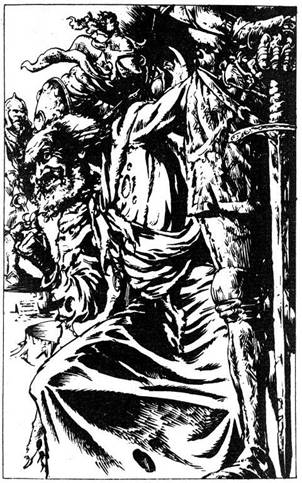
tisztességes ember vagyok, ezért felteszek neked egy kérdést. Ha helyesen válaszoltál, szabadon elmehetsz. De ha a válasz rossz, kővé változtatlak. Újból kuncogni kezd, láthatóan örül az érkezésednek. Mit teszel:
Várod a kérdést? Lapozz a 382-re.
Megtámadod a kardoddal? Lapozz a 195-re.
Az ajtó felé futsz? Lapozz a 250-re.
13.
Az alagút hirtelen balra kanyarodik, és észak felé vezet, a végtelenbe. A lábnyomok, amelyeket követsz, fokozatosan elhalványodnak, ahogy az alagút egyre szárazabbá válik. Hamarosan elmarad a csöpögő mennyezet és a tócsák a földön. Érzed, hogy a levegő melegebbé válik, és izzadni kezdesz, bár egészen lassan mész. Egy kis mélyedést pillantasz meg a bal oldali falban, és benne egy bambuszdarabot. Leemeled, és látod, hogy tiszta folyadékkal van tele. A torkod fájdalmasan száraz, és már szédülsz az alagút melegétől. Ha meg akarod inni a folyadékot, lapozz a 147-re. Ha nem kockáztatod meg, hogy igyál a folyadékból, és inkább továbbmész észak felé, lapozz a 182-re.
14.
Az alagút egy sötét kamrába vezet, amelyet vastag pókhálók borítanak. Keresztülkúszva közöttük egy faládikába botlasz. Ha ki akarod nyitni a ládát, lapozz a 157-re. Ha inkább továbbmész észak felé, lapozz a 310-re.
15.
Csiklandó érzés fut végig a gerinceden, ahogy óvatosan kikúszol a szobából. Megkönnyebbülten felsóhajtasz, amikor visszaértél az alagútba, a koponyát visszadobod a szobába, és becsapod az ajtót. Hálát adva a jó szerencsédnek, újra nyugatnak indulsz. Lapozz a 74-re.
16.
Még hallod a Gnómot, amint azt mondja. - Három koponya - de rögtön egy fehér energianyaláb lövell ki a zárból a melledre, és elveszted az eszméletedet. Dobj egy kockával, adjál 1-et a számhoz, és az összeget vond ki ÉLETERŐDBŐL. Ha életben maradsz, magadhoz térsz, és a Gnóm felszólít, hogy próbáld meg újra. Az előbb rossz ékkövet választottál, tehát ezt a kombinációt nem próbálod meg újra.
A B C
Smaragd Gyémánt Zafír Lapozz a 16-ra.
Gyémánt Zafír Smaragd Lapozz a 392-re.
Zafír Smaragd Gyémánt Lapozz a 177-re.
Smaragd Zafír Gyémánt Lapozz a 287-re.
Gyémánt Smaragd Zafír Lapozz a 132-re.
Zafír Gyémánt Smaragd Lapozz a 249-re.

17.
Nincs elég erőd, hogy kinyisd a súlyos ajtót. A víz már derékmagasságig ér, és kimerültél az erőfeszítéstől. A vízszint gyorsan emelkedik, és vele te is, míg arcod végül a mennyezetnek nyomódik. Hamarosan teljesen elmerülsz, és nem tudod tovább visszatartani a lélegzetedet. Kalandod itt ér véget.
18.
Szerencsédre a kobra méregfoga a bőr csuklóvédőbe mélyed. A kígyó gyorsan visszahúzódik, és újra támadni készül, amikor a Törpe azt mondja, hogy tegyél újabb próbát. Dobj két kockával. Ha az összeg kisebb vagy annyi, mint ÜGYESSÉGED, lapozz az 55-re. Ha nagyobb, lapozz a 202-re.
19.
Nem tudsz ellenállni a Medúza csábító tekintetének, amikor a szemedbe néz. Érzed, hogy a lábad megmerevedik, reménytelenül pánikba esel, s közben kővé változol. Kalandod itt véget ér.

20.
Csak hihetetlen erőd tudja megakadályozni, hogy a mérges pók megharapjon. Azonban legyengülsz, és észreveszed, hogy remeg a kezed, amikor zsebre vágod az aranydarabot. 1 pontot vonjál le ÜGYESSÉGEDBŐL. Megátkozod azt, aki leejtette a hátizsákot, és elindulsz észak felé. Lapozz a 279-re.
21.
A seb semmi hatással nincs a Vérvadra, és az ugyanolyan hevesen támad, mint az előbb. Harcolj tovább, és mihelyt megnyerted a következő fordulót, Tedd próbára SZERENCSÉD. Ha szerencséd van, lapozz a 97-re. Ha nincs szerencséd, lapozz a 116-ra.
22.
Bár egy kicsit kényelmetlenül érzitek magatokat egymás társaságában, tudva, hogy csak egyikőtök lehet a Bajnokok Próbájának győztese, mindketten elégedettek vagytok az ideiglenes szövetség előnyeivel. Elmesélitek egymásnak eddigi utatokat, a legyőzött szörnyeket, a csapdákat és a veszélyeket, amelyeken túljutottatok. Ahogy mentek, hamarosan egy széles verem szélére értek. Olyan mély és sötét, hogy nem látjátok az alját. A Barbár azt ajánlja, hogy kötelével leereszt a gödör fenekére, mondván, hogy fáklyával világítani fog neked. Mit teszel:
Elfogadod a Barbár ajánlatát? Lapozz a 63-ra.
Azt ajánlod, hogy te ereszted le őt, ha már annyira
érdekli, mi van odalent? Lapozz a 184-re.
Azt javaslod, hogy inkább mind ketten ugorjátok
át a gödröt? Lapozz a 311-re.
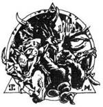
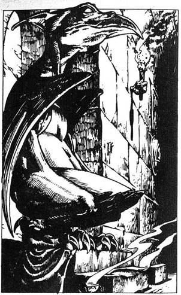
23.
A papíron egy egyszerű figyelmeztetés van, megszáradt vérrel írva. - Óvakodj a Próbamesterektől. - Visszateszed a szögre a papírt, és az alagútban visszafutva újra csatlakozol a Barbárhoz. Lapozz a 154-re.
24.
Az alagút egy boltíves beugrójában egy ékes fa-széket látsz, amelyet egy démonszerű ragadozó madár formájára faragtak. Ha rá akarsz ülni a székre, lapozz a 324-re. Ha inkább továbbmész észak felé, lapozz a 188-ra.
25.
Bár a hőmérséklet az alagútban magasabb, mint amit egyébként elviselnél, a bambuszban talált folyadék életben tart. Lapozz a 197-re.
26.
A pirula tompít és letargikussá tesz. 2 ÜGYESSÉG pontot veszítesz. A Törpe közli, hogy a Próba második állomásához értél. Egy fonott kosárért nyúl, és közli, hogy egy kígyó van benne. Felborítja a kosarat, és a kígyó a földre hull. Egy kobra az, amely fejét felemelve máris támadni készül. A Törpe azt mondja, hogy ki akarja próbálni a reakciódat. Csupasz kézzel kell megragadnod a kobrát a feje alatt, elkerülve halálos marását. Lekuporodsz a földre, feszülten várod a pillanatot, hogy megragadd. Dobj két kockával. Ha az összeg azonos vagy kisebb, mint ÜGYESSÉGED, lapozz az 55-re. Ha az összeg nagyobb, mint ÜGYESSÉGED, lapozz a 202-re.
27.
Fellépsz a megfélemlített emberhez, és kardoddal elvágod a láncot. A férfi térdre borul és meghajol, újra és újra megköszöni, amit tettél. Elmondja neked, hogy négy évvel ezelőtt kísérelte meg a Bajnokok Próbáját, de elbukott. Beleesett egy gödörbe, és egy Próbamesternek. Szukumvit báró egyik labirintus adminisztrátorának kellett megmentenie. Felajánlották neki, hogy választhat a halál és a szolgaság között. Az utóbbit választva rabszolgaként dolgozott a Halállabirintusban a Próbamester segítőjeként, míg végül nem bírta tovább és szökni próbált. Sajnos nem járt sikerrel, és a Próbamester gladiátor őrei elfogták. Hogy móresre tanítsák, levágták a kezét, és egy évre a cellájába zárták. Megkérded tőle, tud-e valamilyen tanáccsal szolgálni, aminek hasznát vehetnéd, - Nos, én nem valami jól szerepeltem itt mondja -‚ de azt tudom, hogy drágaköveket és értékes köveket kell gyűjtened, ha ki akarsz jutni innen. Nem tudom, miért, de így van, - A megcsonkított rab minden további szó nélkül kiront a szobából, és balra fordul az alagútba. Úgy határozol, hogy továbbmész északra és jobbra indulsz az alagútban. Lapozz a 78-ra.
28.
A Törpe láncköpenye a legjobb minőségű acélból készült, láthatóan kitűnő páncélkészítő mester munkája. Lehúzod a Törpe testéről, és magadra öltöd. Adj 1-et ÜGYESSÉG pontjaidhoz. Semmi másnak nem veszed hasznát a szobában, ezért úgy döntesz, hogy megvizsgálod az új alagutat. Lapozz a 213-ra.
29.
Az alagút északra vezet, majd egy idő múlva zsákutcává válik. Egy csúszda szája nyílik az alagút keleti falából. Úgy látszik, ez az egyetlen kivezető út. Úgy döntesz, hogy megkockáztatod, és bemászol a csúszdába. Lágyan siklasz lefelé, és egy szobába zuhansz. Lapozz a 90-re.
30.
Előrelépsz, és a gödör túlvége felé ugrasz. Tedd próbára SZERENCSÉD. Ha szerencsés vagy, lapozz a 160-ra. Ha nincs szerencséd, lapozz a 319-re.
31.
A Gnóm mosolyog, és így szól. - Helyes. Lássuk, van-e zafír a birtokodban? - Ha van zafírod, lapozz a 376-ra, ha nincs, lapozz a 3-ra.
32.
Hamarosan újabb elágazáshoz érsz az alagútban. Egyik ága keletnek vezet, de a nedves lábnyomok, melyeket követsz, továbbra is észak felé tartanak, és úgy döntesz, hogy követed őket. Lapozz a 37-re.
33.
Hiba volt, hogy kardoddal nyúltál a lyukba. Szívókorongok tapadnak rá, és úgy érzed, mintha összetört volna. Elvesztesz 3 ÜGYESSÉG pontot. Bekukucskálsz a lyukba, és látod, hogy a karod csupa vér. Óvatosan ki húzod a kardot és a bőrzacskót, amelyben egy kis rézcsengőt találsz. Elteszed új szerzeményeidet, és északnak indulsz. Lapozz a 292-re.
34.
Megpróbálod beerőltetni kardod hegyét a smaragd szem alá. Legnagyobb meglepetésedre a szem az érintésre összetörik, és mérgező gáz lövell a szemedbe. A gáztól elveszted az eszméletedet, elengeded a kötelet, lezuhansz a bálványról, és összetöröd magad a kőpadlón. Kalandod itt véget ér.

35.
Az alagút még pár száz méteren keresztül nyugatra tart, végül néhány lépcsőnél ér véget, amelyek egy zárt csapóajtóhoz vezetnek. Lassan felmész a lépcsőn, fojtott hangokat hallasz magad fölött. A gyenge fényben látod, hogy a csapóajtó nincs zárva. Ha kopogni akarsz a csapóajtón, lapozz a 333-ra. Ha kivont karddal akarsz berontani az ajtón, lapozz a 124-re.
36.
Gyorsabban futsz, mint bármikor életedben, de a szikla még így is elér. Dobj két kockával. Ha az összeg akkora vagy kisebb, mint ÜGYESSÉG vagy ÉLETERŐ pontjaid, lapozz a 340-re. Ha az összeg nagyobb, mint akár ÜGYESSÉG, akár ÉLETERŐ pontod, lapozz a 7-re.
37.
Az átjáró egy széles barlangba vezet, amely sötétebb, de sokkal szárazabb. A lábnyomok előtted fokozatosan halványulnak, majd eltűnnek. Egy kb.

hat méter magas hatalmas bálvány áll a barlang közepén. A szeme drágakőből van, mindkettő akkora, mint az öklöd. Két óriási, kitömött madárszerű teremtmény áll a bálvány mindkét oldalán. Ha meg akarod mászni a bálványt, hogy megszerezd a drágaköveket, lapozz a 351-re. Ha inkább keresztülmész a barlangon a szemközti alagútba, lapozz a 239-re.
38.
A férfi csendesen áll melletted, míg te felhörpinted a vizet és befalod a kenyeret. Éles fájdalom hasít a gyomrodba, és térdre esel. Az öreg homlokát ráncolva néz rád, és így szól: - Nos, mit remélsz, ha egyszer mérgezett ételt eszel? - 3 ÉLETERŐ pontot veszítesz. A férfi elcsoszog, magadra hagy, miközben fájdalmadban a földön fetrengsz. Ha még életben vagy, végül összeszeded az erődet, hogy folytasd utadat nyugat felé. Lapozz a 109-re.
39.
Sikerül kikerülnöd a lebukó Óriáslégy kinyújtott lábait. Hátralépve kihúzod kardodat, hogy megküzdj a förtelmes szörnyeteggel, amikor az megfordul, hogy újra támadjon.
Óriáslégy ÜGYESSÉG 7 ÉLETERŐ 8
Ha győzöl, lapozz a 111-re. Vagy elmenekülhetsz, visszafutva az északra vezető alagútba. Lapozz a 267-re.
40.
Kikiáltasz a Törpének, hogy kész vagy megküzdeni a Minotaurusszal. A faajtó lassan felemelkedik, és látod, amint a félelmetes félig ember, félig bika bestia az arénába lép. Gőz csap ki orrlyukából, ahogyan haragra gerjesztve magát támadásra készül. Meglóbálva kétfejű fejszéjét, hirtelen megindul feléd.
Minotaurusz ÜGYESSÉG 9 ÉLETERŐ 9
Ha győzöl, lapozz a 163-ra.
41.
Lassan mész a fülkében, óvatosan ellenőrzöd a padlót, vannak-e újabb rejtett csapdák. Látod, hogy a serlegben csillogó vörös folyadék van. Mit teszel:
Megiszod a vörös folyadékot? Lapozz a 98-ra.
Otthagyod a serleget, és visszamész, hogy
megkeresd a Barbárt (ha eddig nem tetted
meg)? Lapozz a 126-ra.
Távozol a kamrából, és továbbmész
nyugatnak? Lapozz a 83-ra.
42.
A kobra méregfoga mélyen a csuklódba mélyed, érzed, ahogy a méreg szétárad a testedben. 5 ÉLETERŐ pontot vesztesz. Ha életben maradsz, a Törpében nincs kegyelem, újra kell próbálkoznod. Dobj két kockával. Ha az összeg akkora vagy kisebb, mint ÜGYESSÉGED, lapozz az 55-re. Ha az összeg nagyobb, mint ÜGYESSÉGED, lapozz a 202-re.
43.
Az alagút élesen jobbra fordul, és ameddig ellátsz, északnak vezet. A bal oldali falban egy ajtó van. Hallod, hogy bentről valaki segítségért kiált. Ha be akarsz nyitni, lapozz a 200-ra. Ha inkább továbbmész, akkor lapozz a 316-ra.
44.
Mindössze néhány méterre vagy az ajtótól, amikor hallod, hogy az öreg mögötted néhány különös szót mond. Izmaid azonnal megkeményednek, és érzed, hogy a bőröd merevvé válik. Kezdesz megijedni, de semmit sem tehetsz, hogy megakadályozd tested megkövülését. Kalandod itt véget ér.

45.
A borotvaéles csillag rettenetes erővel fúródik a hátadba. Elvesztesz 1 ÜGYESSÉG 5 4 ÉLETERŐ pontot Ha életben maradsz, nagy nehezen kihúzod a surikent a hátadból, miközben a Nindzsa egy újabbat hajít feléd. Lapozz a 312-re.
46.
Óvatosan leereszkedsz bálványon, és nem vesztegetve több időt a barlangban, az északra nyíló alagút felé futsz. Lapozz a 239-re.
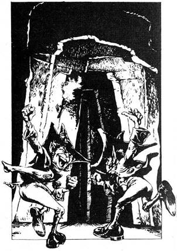
47.
Van egy üreges facső nálad? Ha igen, lapozz a 10-re. Ha nincs, lapozz a 335-re.
48.
Csak hatalmas erőd és makacs elhatározásod tart vissza attól, hogy öntudatlanul a földre zuhanj. Összeszorítod a fogad, és elszántan tovább küzdesz. Lapozz a 197-re.
49.
Kikukucskálsz a sarkon, és két apró teremtményt látsz elfutni. Mindketten bő ruhát és csúcsos kalapot viselnek. Ezek a bajkeverő Leprechaunok. Ha követni akarod őket, lapozz a 205-re. Ha inkább visszamész az utolsó elágazáshoz, amely északnak tart, lapozz a 241 re.
50.
Arra ébredsz, hogy Throm lehúzza a gyűrűt az ujjadról. A földre teszi és csatabárdjával összetöri, majd rosszallóan morogva megindul keletnek. Lassan felállsz, és utánabotorkálsz. Lapozz a 221-re.


51.
A Hobgoblinokat váratlanul éri támadásod, és az elsőt levágod, mielőtt kihúzhatná kardját. Szembefordulsz a másik Hobgoblinnal, amely a fogát vicsorítja rád gyűlöletében.
Hobgoblin ÜGYESSÉG 6 ÉLETERŐ 5
Ha győzöl, lapozz a 9-re.
52.
Amint kinyitod a könyvet, az szétmállik a kezedben, és a lapok porrá válnak. Sikerül azonban megmentened néhány kis darabot, és elolvasod. A könyv, úgy tűnik, szörnyekről szólt, és az a rész, amely megmaradt, egy Vérvad nevű szörny teljes leírását tartalmazza. A Vérvad egy rettenetes, dagadt teremtmény, testét kemény, tüskés bőr fedi, arcát hólyagok borítják, amelyek felpattanva ál-szemekké válnak. Ezek azért fejlődtek ki, hogy elrejtsék a Vérvad egyetlen gyenge pontját: a valódi szemét. A Vérvadak általában büdös iszapban tartózkodnak, amelyből mérges gáz csap fel. A gáz olyan erős, hogy könnyen eszméletét vesztheti tőle az ember. Bár a Vérvad nemigen tudja kivonszolni
magát az iszapból, hosszú, gonosz nyelvét az áldozata köré fonja, és úgy húzza be magához az iszapba. Ahogy az áldozat húsa oszlásnak indul, a Vérvad megeszi. Elmondod Thromnak, mit tudtál meg a szörnyűséges Vérvadról, de ő csak megvonja vállát, és azt mondja, hogy induljatok. Ha még nem tetted meg, kinyithatod a fekete könyvet - lapozz a 138-ra. Különben tovább kell menned Thrommal, lapozz a 369-re.
53.
A Vérvad nem tud kimászni az iszappocsolyából, de hosszú nyelvét megpróbálja a lábad köré tekerni. Szerencsére nem ér el odáig, ahol összeestél. A levegő a föld közelében nem tartalmaz mérgező gázokat, de torokfájással térsz magadhoz. A ruhaujjaddal feded az orrod, hogy azon keresztül lélegezz, és eldöntsd, mit tehetsz. Ha a pocsolyát megkerülve futva akarod elérni az alagutat, lapozz a 370-re. Ha meg akarod támadni kardoddal a Vérvadat, lapozz a 348-ra.
54.
A lasszó meglazul, és le tudod húzni a bálvány nyakáról. Hangos puffanással zuhan a földre. Gyorsan összetekered a kötelet, és a hátizsákodba teszed. Nem vesztegetsz több időt a barlangban, gyorsan az északra nyíló alagút felé indulsz. Lapozz a 239-re.
55.
Villámgyorsan kinyújtod a kezed, és megragadod a kobrát, pontosan nyitott szája alatt. Felemeled, és kinyújtott karral meglóbálod a Törpe előtt. A szeme
sem rebben, hanem nyugodt, kifejezéstelen hangján így szól: - Kérlek, tedd vissza a kobrát a kosarába, és készülj a Próba utolsó részére. Kövess, - Így teszel, és követed a Törpét a kamra hátsó részébe, ahol Throm láthatóan zavartan sétál fel és alá. Intesz neki, miközben a Törpe egy újabb rejtekajtót nyit ki, és közli, hogy menj be, és várj rá. Ismét szót fogadsz, és egy újabb kör alakú szobában találod magad, amely egy kis arénára emlékeztet. A padlót homok borítja, és a falon kis erkély fut körbe. A titkos ajtóval szemben egy baljós külsejű faajtó van. Hirtelen kiáltást hallasz, és felnézve a mosolygó Törpét pillantod meg az erkélyen. Két papírdarabot dob le. Az egyikre ez van írva: O Króp Is. A másikra: Ruin Usz Moat. Örökké nyugodt hangján a Törpe így szól. Ha helyes sorrendbe tudod rakni a szavak betűit, két teremtmény nevét találod bennük. Választhatsz, hogy melyikükkel küzdesz meg a Halál Arénájában. - Ha azonosítani tudod a teremtményt az O Króp Is betűk összerakásával, lapozz a 143-ra. Ha azonosítani tudod a teremtményt a Ruin Usz Moat betűk azonosításával, lapozz a 40-re. Ha egyiket sem tudod azonosítani, lapozz a 347-re.
56.
Látod, hogy az akadály egy széles, barna, sziklaszerű tárgy. Megérinted, és meglepve tapasztalod, hogy lágy, szivacsszerű. Ha át szeretnél mászni rajta, lapozz a 373-ra. Ha ketté akarod vágni a kardoddal, lapozz a 215-re.
57.
Bár óvatosan ellenőrzöd a ládát, hogy nincs-e rajta valami gyanús, nem láthatod a benne levő csapdát. Ahogy fölemeled a fedelét, egy zsinóron levő vasgolyó hátralendül és összetöri a fedélre erősített üvegkapszulát. Azonnal mérgező gázfelhő tölti meg a levegőt, és te köhögve, köpködve hátratántorodsz. 4 ÉLETERŐ pontot veszítesz. Ha életben maradsz, lapozz a 198-ra.
58.
Lassan a cölöpök közé lépsz, vigyázva, hogy egyiket se érintsd. Dobj két kockával. Ha az összeg akkora vagy kisebb, mint az ÜGYESSÉG pontod, lapozz a 80-ra. Ha az összeg nagyobb, mint ÜGYESSÉG pontod, lapozz a 246-ra.
59.
A távolból lassú lépteket hallasz közeledni. Nem tudván, hogy ki vagy mi lehet az, körülnézel rejtekhely után. Széles bevágást találsz az alagút falában, amelyre ráadásul árnyék esik. Ha nem akarsz meghátrálni és kardot húzol, lapozz a 341-re. Ha inkább elrejtőzöl az árnyékba, lapozz a 283-ra.
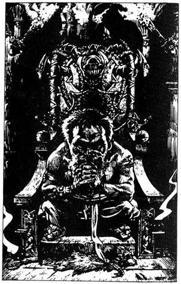
60.
Az alagút egy vastag tölgyfa ajtónál ér véget. Throm nem vesztegeti az időt azzal, hogy a kilinccsel próbálkozzon, és némiképp meglepődik, amikor kiderül, hogy az ajtó nem volt bezárva. Kitárja, és egy fáklyákkal megvilágított terembe léptek. Egy díszes széken egy Törpe ül, és üdvözöl titeket. - Idáig jó munkát végeztetek. Kalandorok - mondja mély hangján. - Azonban mindketten tudjátok, hogy a Bajnokok Próbájának mindössze egy győztese lehet. Szukumvit báró engem bízott meg azzal, hogy mint Próbamester gondoskodjak róla, hogy csak a legkülönb mehessen tovább. Ezért kénytelen vagyok próba elé állítani benneteket, hogy egyikőtöket kizárjam. Kérlek, ne próbáljatok megszabadulni tőlem. Teljesen haszontalan lenne, mivel - mint látjátok, nincs kiút a teremből, és csak én tudom, hol található a rejtett ajtó. Nos, volnátok szívesek eldönteni, melyikőtök megy először, hogy megtehessem a szükséges előkészületeket? - Thromra nézel, és hirtelen dühöt érzel, hogy hatékony együttműködéseteknek vége szakad. Throm feléd hajol, és azt súgja a füledbe, hogy meg kéne ölnötök a Törpét, a kijárat miatt ráértek később is aggódni. Ha csatlakozni akarsz hozzá és megtámadjátok a Törpét, lapozz a 179-re. Ha inkább meggyőzöd Thromot, hogy csináljátok végig a Törpe tesztjét, lapozz a 365-re.
61.
Bár rettenetesen cseng a füled, közeledő lépések zaját hallod az alagútban. Hangos sikolyod felkeltette az alagútőrség figyelmét. Egy Hobgoblin áll fölötted. Bágyadt mosoly van az arcán, ahogy kardja hegyét a nyakadhoz nyomja. Nem tudod védeni magad és megakadályozni a Hobgoblint, hogy végezzen veled. Kalandod itt véget ér.
62.
A Gnóm felugrik a levegőbe, és felkiált: - Szép munka volt. Mostanáig senkinek sem sikerült megtalálnia mindhárom drágakövet. Készülj hát a végső Próbára, amelyet egyszer, mindössze egyszer magyarázok el. Amint látod, az ajtó zárján három nyílás van: A, B és C jelűek. Mindegyiket úgy készítették, hogy egy bizonyos drágakövet fogadjon csak be. Három drágakövedet a megfelelő sorrendben kell betenned a nyílásokba. Ha elsőre sikerül megtenned, minden rendben van. Azonban ha a rossz nyílásba teszed a drágakövet, energianyaláb csap ki rád a zárból és megsebesít. De, ahogy mondtam, egy kicsit segíthetek neked. Ha az egyik drágakövet a megfelelő helyre teszed, és csak a másik kettőt nem, így kiáltok fel. „Egy korona, és két koponya.” Ha mindhármat rossz helyre teszed, azt kiáltom: „Három koponya.” Újra és újra próbálkozhatsz, addig, amíg nem sikerül, vagy meg nem halsz. Készen állsz? - Bólintasz, hogy igen, és a zárhoz lépsz. Döntsd el, melyik drágakövet melyik nyílásba teszed.
A B C
Smaragd Gyémánt Zafír Lapozz a 16-ra.
Gyémánt Zafír Smaragd Lapozz a 392-re.
Zafír Smaragd Gyémánt Lapozz a 177-re.
Smaragd Zafír Gyémánt Lapozz a 287-re.
Gyémánt Smaragd Zafír Lapozz a 132-re.
Zafír Gyémánt Smaragd Lapozz a 249-re.
63.
A kötelet a derekad köré tekered, és megfogod a meggyújtott fáklyát, amelyet Throm így hívja magát barbár szövetségesed ad neked. A lelógó kötelet megmarkolva Throm lassan leereszt az alant tátongó sötét verembe. A fáklya fényénél látod, hogy a gödör oldala hihetetlenül sima. Vagy húsz métert ereszkedsz lefelé, és még mielőtt a gödör fenekére érnél, egy újabb alagutat pillantasz meg, amely észak felé vezet. Felszólsz Thromnak, mit fedeztél fel. A barbár visszakiabál, hogy egy kiálló sziklára csomózva a kötelet ő is leereszkedik, és csatlakozik hozzád. Hallod, amint lefelé mászik, és hamarosan újra együtt vagytok. Throm lehúzza a kötelet a szikláról, és az új alagútban északnak indultok. Lapozz a 194-re.
64.
Amint felhúzod ujjadra a gyűrűt, egész tested remegni kezd. Dobj két kockával. Ha az összeg akkora vagy kevesebb, mint ÜGYESSÉG pontszámod, lapozz a 115-re. Ha az összeg nagyobb, mint ÜGYESSÉG pontszámod, lapozz a 190-re.
65.
Ittál az italból, amelyet a fekete bőrkötéses könyvben találtál? Ha igen, lapozz a 345-re. Ha nem, akkor a 372-re.
66.
Néhány perc gyaloglás után egy elágazáshoz érsz az alagútban. Egy, a falra festett fehér nyíl nyugat felé mutat. A földön nedves lábnyomok jelzik, merre haladtak az előtted járók. Nehéz biztosan megmondani, de úgy tűnik, hogy három közülük a nyíl irányába halad, míg egyikük úgy döntött, hogy keletnek megy. Ha nyugat felé kívánsz menni, lapozz a 293-ra. Ha keletnek, lapozz a 119-re.
67.
Megragadod a híd egyik víz alatti pillérét, és belekapaszkodva visszatartod a lélegzeted. Ezalatt a Troglodyták elérték a folyópartot, és úgy vélik, hogy nyilván elsodort a folyó és halálodat lelted ott, ahol a víz lezúdul a hegyről. De mostanra a tüdőd majd szétszakad. Ismét Tedd próbára SZERENCSÉD. Ha szerencséd van, lapozz a 146-ra. Ha nem, lapozz a 219-re.
68.
Végigmész az átjárón, és hamarosan egy mély, sötét verem szélén találod magad. Az átjáró továbbvezet kelet felé a verem másik oldalán. Úgy gondolod, át tudnád ugrani a vermet, de nem vagy biztos benne. Egy kötél lóg le a mennyezetről, pontosan a verem közepe fölött. Mit teszel:
Áthajítod pajzsodat a vermen, és
utánaugrasz? Lapozz a 271-re.
Minden tulajdonoddal átugrod a
vermet? Lapozz a 30-ra.
Kardoddal a kötélért nyúlsz, hogy átlendülhess
a verem felett? Lapozz a 212-re.

69.
Ivy nem veszi észre, amikor kinyitod az ajtót. Ki osonsz a szobából, és csendesen behúzod magad mögött az ajtót. Egy újabb alagút végén találod magad. Lapozz a 305-re.
70.
Épphogy sikerül a falhoz lapulnod, amikor a szikla beomlik az alagútba, és darabokra törik. Mikor leporolod magad, hirtelen napfényt pillantasz meg az alagút nyílásában. A kék ég és a zöld fű gyönyörű látványa felé futsz. Ahogy kirohansz az alagútból, üdvözlő tömeget vársz, de rémülten látod, hogy tévedtél. Szó sincs hősöknek kijáró üdvözlésről, aki körötted van, mind halott. Egy hideg kamrában vagy, amely tele van fegyveres csontvázakkal és holttestekkel, a kijárat a győzelembe csak illúzió volt. Csak az elmúlt kalandok holttestei valódiak. Visszarohansz az alagútba, de láthatatlan kerítésbe ütközöl. Csapdában vagy, és maradék napjaidat a halottak kamrájában kell töltened.

71.
Ismét a pergamen után nyúlsz, ám ez most egy halom törött csont között fekszik. Kitekered, és egy szoba alaprajzát találod rajta, egy rettenetes teremtmény képével. A szörny alatt egy vers, amely így szól:
„Ha Manticore-t látsz, jól vigyázz.
A farka csupa veszély.
Védd magad, mert tüskét lő ki.
Sebesen, mint a szél.”
Összetekered a pergament, és a hátizsákodba teszed. Újra és újra elmondod a versikét, miközben az átjáróhoz mész. Lapozz a 128-ra.
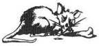
72.
A Tükör összetörik, üvegdarabok repülnek szerteszét. A Tükör Démon négy arca eltorzul fájdalmában, és mind a négyen repedések tűnnek fel. Az arcok darabokra törnek, és üvegszilánk alakjában a földre hullanak. Balszerencsédre csúnyán megvágtad kardforgató kezed, miközben eltörted a tükröt. Bár az erőd megmaradt, a vívótudásod csökkent. 2 ÜGYESSÉG ponttal kevesebbel folytatod utadat észak felé. Lapozz a 122-re.
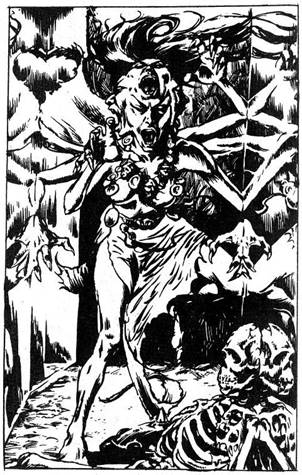
73.
Ha eddig nem tetted volna meg, visszamehetsz megkeresni a Barbárt. Lapozz a 126-ra. Ha úgy döntesz, hogy kilépsz a kamrából és továbbhaladsz nyugat felé, lapozz a 83-ra.
74.
Az alagút élesen jobbra fordul, és olyan érzésed van, mintha képtárban lennél. Itt azonban vagy húsz méter hosszan képek helyett tükrök lógnak a falon. A jobb oldali falnál egy emberi csontvázat látsz, mely mintha félig kiállna az egyik tükörből. Hirtelen egy groteszk lény bukkan fel a tükörből, és az utadat állja. Négy sikoltó arca s négy karja van. Lassan feléd indul, s mind a négy karját kinyújtja, hogy megragadjon. Ő a Tükör Démon, aki egy másik dimenzióból jött, hogy elragadjon. Mit teszel?
Kívánsz valamit (ha a Kívánságok Gyűrűjét
viseled)? Lapozz a 265-re.
Megpróbálod bezúzni a
tükröket? Lapozz a 300-ra.
Kardoddal a Tükör Démonra
támadsz? Lapozz a 327-re.
75.
Sebedbe dörzsölöd a folyadékot, de nem gyógyít. Az üres palackra meredve azon gondolkodsz, vajon mi lehetett benne. Ha eddig nem tetted meg, kinyithatod a vörös könyvet - lapozz az 52-re. Különben tovább kell haladnod Thrommal észak felé - lapozz a 369-re.
76.
Megkerülöd a Sziklahernyó óriási tetemét, és bekukucskálsz odújának sötétjébe. Mindössze néhány méterre látsz be, de annyit ki tudsz venni, hogy az enyhén kanyarodik és nedves a Sziklahernyó nyálkájától. Ha fel akarod deríteni az odút, lapozz a 317-re. Ha inkább továbbmész nyugatra az alagútban, lapozz a 117-re.
77.
Keresztültántorogsz a nyitott ajtón egy újabb alagútba, amelynek végén a napvilág rég várt látványa vár. Legnagyobb meglepetésedre a Gnóm holttestét pillantod meg félúton. Egy nyílvessző áll ki a fejéből. Szabadság utáni vágyában a Gnóm esett bele Szukumvit báró utolsó csapdájába. Elmész mellette, és kilépsz a ragyogó napsütésbe. Lapozz a 400-ra.
78.
Egy nyitott kürtő van a jobb oldali falban, úgy egy méter lehet az átmérője. Túl sötét van, hogy messze beláss. Bekiáltasz, és hallod, ahogy a hangod visszhangzik a vascsőben, majd elhalkul. Ha le akarsz mászni a kürtőn, lapozz a 301-re. Ha inkább tovább mész északnak, lapozz a 142-re.
79.
Keményen megmarkolod a szék karfáját, és arra vársz, hogy fájdalom fog testedbe hasítani. Tedd próbára SZERENCSÉD. Ha szerencséd van, lapozz a 106-ra. Ha nincs, lapozz a 383-ra.
80.
Nem kapkodsz, és sikerül átlépned az utolsó cölöpön is, anélkül hogy hozzáérnél. Keletnek sietsz, még mindig a nedves lábnyomokat követve. Lapozz a 313-ra.

81.
A Goblin szobájának összes bútorzata egy asztal, két szék és egy szekrény a fal mellett. Két zárt ajtót látsz, az egyiket a nyugati, a másikat az északi falon. Mit teszel?
Kinyitod a szekrényt? Lapozz a 307-re.
Kinyitod a nyugati ajtót? Lapozz a 263-ra.
Kinyitod az északi ajtót? Lapozz a 136-ra.
82.
Ahogy a Verembestia teste a falhoz csapódik, elengeded a kötelet, és biztonságban a földre ugrasz. A kettős ajtó felé rohansz, és megkönnyebbülsz, amikor kitárod és kijutsz a veremből. Hagyod, hogy az ajtó becsapódjon mögötted, és észak felé indulsz az alagútban. Lapozz a 214-re.
83.
Az átjáró hamarosan egy elágazáshoz vezet. További lábnyomokat veszel észre a földön, legalább három párat, amelyek a déli átjáróból északra tartanak. Úgy határozol, hogy követed őket. Lapozz a 37-re.
84.
Dobj két kockával. Ha az összeg több, mint nyolc, lapozz a 152-re. Ha az összeg nyolc vagy kisebb, lapozz a 121-re.

85.
Mielőtt bármit is tehetnél, az öreg néhány különös szót mormol. Érzed, hogy az izmaid megkeményednek, bőröd megmerevedik. Kezdesz megrémülni, de már nem tudod megállítani tested kővé válását. Kalandod itt véget ért.

86.
A kulcs megfordul a zárban, és az ajtó egy négyirányú kereszteződésre nyílik az alagútban. Sem keletre, sem nyugatra nem látsz semmit, kivéve a most már ismerős kristályokat, amelyek a mennyezetről alácsüngve sugározzák bágyadt fényüket. Hirtelen egy hang hív. - Erre gyere. Erre gyere. Helyes úton jársz. Úgy hallod, mintha pontosan elölről jönne. Kíváncsiságod győzedelmeskedik, és úgy határozol, hogy a csábító hang felé indulsz. Lapozz a 187-re.
87.
Az ajtó egy tágas szobába nyílik. Lapozz a 381-re.
88.
Mihelyt meglátnak, a Troglodyták íjukat felemelve futásnak erednek, hogy bekerítsenek. Rémületedre vezetőjük előrelép, és közli, hogy foglyuk vagy, és régi rítusuk szerint próbának kell alávetned magad, a Nyílfutásnak. Ha hajlandó vagy részt venni a Nyílfutásban, lapozz a 343-ra. Ha inkább megpróbálsz karddal utat vágni magadnak, lapozz a 268-ra.
89.
Talajt érsz, s hogy újra szilárd talaj van talpad alatt, megpróbálod lerázni a kötelet a bálvány nyakából. Tedd próbára SZERENCSÉD. Ha szerencséd van, lapozz az 54-re. Ha nincs, lapozz a 261-re.

90.
Ahogy felállsz, a legundorítóbb látványt pillantod meg, amelyben valaha is részed volt. Egy kör alakú medencét tele bűzös iszappal és benne egy gumószerű teremtményt, amely túl szörnyű, hogy hihető legyen. A teste zöld, és félelmetes külsejű tüskék borítják. Arca tele karmazsinvörös hólyagokkal, egyikük hirtelen felpattan, és felfedi a gonosz, mindent látó szemek egyikét. Keskeny ösvény vezet a medence szélén a túloldali falból nyíló újabb alagúthoz. Ha korábban olvastál részleteket a gyűlöletes Vérvadról a bőrkötéses könyvben, lapozz a 172-re. Ha nem olvastad azt a könyvet, lapozz a 357-re.
91.
Az Ork (harcos) láncos buzogánya a karodba csap, és kardod a földre hull. Puszta kézzel kell küzdened vele, és a harc tartamára ÜGYESSÉGED 4 ponttal csökken. Szerencsére az alagút túl keskeny, így a két Ork nem tud egyszerre támadni. Egyenként küzdesz meg velük.
Első Ork ÜGYESSÉG 5 ÉLETERŐ 5
Második Ork ÜGYESSÉG 6 ÉLETERŐ 4
Ha győzöl, lapozz a 257-re.

92.
Minden erődet összeszedve, kardod egyetlen csapásával elbánsz a Tükör Démonnal. Fülsiketítő zajjal repedések jelennek meg arcán és végtagjain. Szájai fájdalomüvöltésben törnek ki, majd a Démon teljesen szétesik, és apró darabokban a földre hull. Nagyot sóhajtasz megkönnyebbülésedben, és továbbsietsz. Lapozz a 122-re.
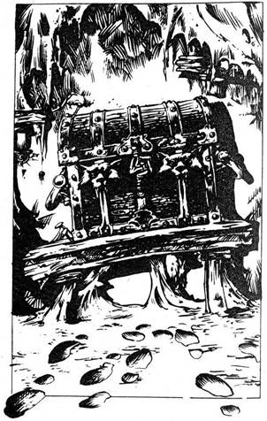
93.
Az ajtó egy sötét kis szobába vezet, amely üres, csak egy vaskos faláda fekszik egy polcon a szemközti falon. A padlót vastag por borítja, és jól kivehetők benne a friss lábnyomok az ajtótól a ládáig és vissza. Kíváncsi vagy, hogy vajon valamelyik vetélytársad jár-e előtted, vagy a ládát csak nemrég helyezte el a polcon valamelyik Próbamester. Ha be akarsz menni a szobába és kinyitni a ládát, lapozz a 284-re. Ha inkább továbbmennél az alagútban, lapozz a 230-ra.
94.
Mély lélegzetet veszel, és a verem fölé hajolva alkarodat a tekergő férgek közé dugod. Hidegek és nyirkosak, és rettentően kellemetlen hozzájuk érni, de ártalmatlanok, és megragadhatod a tőr markolatát. Erőset rántasz rajta, és kihúzod a résből, amelybe a hegye szorult. Megcsodálod a szépségét, elgondolkodsz, hogy vajon egy szerencsétlenül járt versenyzőé lehetett-e, aztán az opálgombos tőrt övedbe dugod, és otthagyod a barlangot. Lapozz a 174-re.
95.
A vaskarika egy kis csapóajtóhoz van erősítve. Könnyen nyílik, és belül egy kis tartóban egy szépen megmunkált pajzsot találsz, amely a legtisztább vasból készült. Megcsodálod ragyogását, s a karodra csatolod, 1-et adj ÜGYESSÉG pontjaidhoz. A szárnyasajtóhoz mész, és kinyitod. Lapozz a 248-ra.
96.
Második csapásoddal sem sikerül bezúzni a tükröt. A Tükör Démon kinyúl, megragadja a csuklódat, és a tükör felé húz. Hihetetlenül erős, és minden erőfeszítésed ellenére sem tudsz ellenállni neki. Egyre közelebb kerülsz a tükörhöz. Amikor a Tükör Démon a tükörhöz ér, mintha egyenesen áthatolna rajta. Rémülten látod előbb saját karodat, majd egész tested is eltűnni a tükörben. Most már a tükörvilágban vagy, egy másik dimenzióban, amelyből nincs visszaút.
97.
Nem tudod, de a Vérvadnak egyetlen gyengéje van: valódi szeme. Inkább véletlen szerencse, mint szándék, de pengédet pontosan az egyikbe döföd, és a Vérvad azonnal visszazuhan medencéjébe. Néhány erős rángás után elmerül a medence olajos vizében. Nem vársz, hogy megtudd, magához tér-e, az alagútba rohansz; minél előbb szeretnél távol lenni a Vérvad mérgező kamrájától. Lapozz a 134-re.
98.
A serleget felemelve működésbe hozol egy rugós reteszt, és egy dárda vágódik ki a fa asztallábból. Tedd próbára SZERENCSÉD. Ha szerencsés vagy, lapozz a 105-re. Ha nincs szerencséd, lapozz a 235-re.
99.
Ivyre mosolyogsz, és azt mondod, hogy szerinted ő és Savanyúhas nagyon hasonlítanak egymásra. Aztán, míg a lány csodálattal tekint a festményre, felkapsz egy törött zsámolyt, mögé lopózol, és olyan erővel vágod tarkón, ahogy csak tudod. Hatalmas megkönnyebbülésedre eszméletlenül zuhan a földre. Ha át akarod kutatni a szobáját, lapozz a 266-ra. Ha nem, a keleti falon levő ajtón távozol. Egy alagút végénél találod magad. Lapozz a 305-re.
100.
Mindössze néhány métert teszel meg az átjáróban, és a bal oldali falban egy újabb zárt ajtót pillantasz meg. Egy X betű van a közepére karcolva. Füledet az ajtóra téve hallgatózol, de semmit sem hallasz. Ha be akarsz nyitni, lapozz a 87-re. Ha inkább továbbmennél észak felé, lapozz a 217-re.
101.
A folyó sodra nagyon erős, elragadja páncélodat és hátizsákodat, és nem tudsz a sodrással szemben úszni. Másodpercek alatt a híd alá kerülsz. A Troglodyták a folyóparton állva röhögve, gúnyolódva figyelik, mint sodor el a zuhatag a hegy mélyére.
102.
Egy kicsi, üres szobába jutsz. Amikor belépsz, az ajtó becsapódik mögötted. Hirtelen egy hang morajlik a semmiből. - Üdvözöllek a Halállabirintusban, gazdám, az agyafúrt gyilkos föld alatti világában. Kalandor, remélem, megtiszteled azzal gazdámat, hogy nevét kiáltod? - Mit kiáltasz?
Üdv Szukumvit? Lapozz a 133-ra.
Szukumvit egy féreg? Lapozz a 251-re.
103.
Belélegzed a mérgező gázt, és fulladozni kezdesz. 3 ÉLETERŐ pontot veszítesz. Ha életben maradsz, lapozz a 77-re.
104.
Gyorsan reagálsz, átugrasz a kinyújtott nyelv felett, a Vérvadat magad mögött hagyod, hogy medencéjében henteregve újabb áldozatra várjon. Lapozz a 134-re.
105.
Jók a reflexeid, és gyorsan félreugrasz. A dárda elzúg melletted, és a szemközti falba fúródik. Látod, hogy a serleg a földön fekszik, és a vörös folyadék patakokban folyik a szürke kövön. Legalább a serlegnek hasznát veheted, ezért hátizsákodba rakod. Ha eddig nem tetted volna meg, visszamehetsz megkeresni a Barbárt - lapozz a 126-ra. Ha nem, kilépsz a kamrából, és továbbmész nyugatnak - lapozz a 83-ra.

106.
A szék karfáját megcsavarod, s egy titkos lemez pattan fel. Egy üvegfiolát találsz alatta, egy mélyedésben. Kiveszed, és elolvasod a címkéjét. - Doppelganger Ital - csak egy adag. Ettől a folyadéktól tested bármely közeli élőlény alakját fölveszi, - Hátizsákodba süllyeszted a különös italt, és továbbmész északnak. Lapozz a 188-ra.
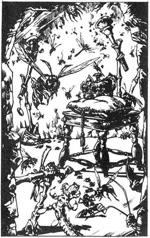
107.
Az alagút jobb oldali falán egy boltíves ajtóra bukkansz. A súlyos kőajtó zárva van, de vasretesz és kerek kilincs van rajta. Ha próbálkoznál az ajtóval, lapozz a 168-ra. Ha ehelyett inkább továbbmész az alagútban, lapozz a 267-re.
108.
Széles üvegtábla van az alagút bal oldali falán. Fáklyákkal jól megvilágított szobába látsz az üvegen keresztül, amelyben százféle Óriásrovar nyüzsög. Méhek, darazsak, bogarak, kullancsok, még a kukacok is több mint hat centiméter hosszúak. Fenyegető a zaj. A szoba közepén egy rubintokkal kirakott korona fekszik egy kis asztalon. A korona közepén egy jókora gyémánt látszik. Mit teszel?
Betöröd az üveget, és megpróbálod megszerezni
a koronát? Lapozz a 394-re.
Továbbmész nyugatnak? Lapozz az 59-re.
Visszatérsz az észak felé vezető
elágazáshoz? Lapozz a 14-re.
109.
Újabb elágazáshoz érsz az alagútban. Ha tovább akarsz menni nyugatnak, lapozz a 43-ra. Ha északnak akarsz menni, lapozz a 24-re.
110.
Az alagút hirtelen újra élesen jobbra fordul. Kelet felé haladsz rajta, és egy fura építményhez érsz; tizenkét facölöp van az alagútban keresztben, a földtől úgy félméternyire, egymástól méteres távolságban. Ha a cölöpök közé akarsz lépni, lapozz az 58-ra. Ha a cölöpök tetején akarsz elmenni, lapozz a 223-ra.
111.
Letörlöd kardodról a ronda sárga moszatot, és az ajtóhoz sietsz, vissza a folyosóra. Északnak indulsz. Lapozz a 267-re.
112.
Két adag élelmiszertől eltekintve, amelyek átáztak és ehetetlenné váltak, összes többi tulajdonod érintetlen maradt. Gondosan visszarámolod őket a hátizsákodba, és továbbmész északnak. Lapozz a 356-ra.
113.
A fagolyó elsüvít a koponya mellett, hangos csattanással ütközik a szemközti falnak. Ha újra meg akarod próbálni egy másik golyóval, lapozz a 371-re. Ha már kétszer dobtál, vagy nem akarsz újra dobni, úgy is dönthetsz, hogy becsukod az ajtót, és továbbmész nyugatnak. Lapozz a 74-re.
114.
A barlanglakó bőr csuklóvédőt visel, amelyről négy kis patkánykoponya csüng alá. Ha a csuklódra akarod tenni, lapozz a 336-ra. Ha inkább továbbmész északnak, lapozz a 298-ra.
115.
A tested továbbra is remegés rázza, és úgy érzed, bármely pillanatban elájulhatsz. De mert igen erős vagy, mégis vissza tudod tartani a rémes rázkódást. Végül megnyugszol, és kezded érezni a gyűrű áldásos hatását. Adj 3-at ÉLETERŐ pontjaidhoz. Látod, hogy Throm aggódva néz rád, és megnyugtatod, hogy teljesen összeszedted magad. Throm elindul keletnek, és te sietve követed. Lapozz a 221-re.
116.
Nem tudod elhinni, hogy a Vérvadra nem hat az újabb seb. Egy perccel tovább habozol a kelleténél, és a szörny előreveti magát, s állkapcsával bezúzza a koponyádat. Aztán behúz a medencéjébe, ahol a rettenetes teremtmény egy idő után elfogyaszt.
117.
Sokáig mész az alagútban, végül zsákutcába érsz. A folyosó végén egy, a padlótól a mennyezetig érő tükör található, de a homályban alig tudod kivenni saját tükörképedet. Ha közelebbről akarod megnézni a tükröt, lapozz a 329-re. Ha inkább megteszed a hosszú utat az utolsó elágazásig, hogy keletnek haladj, lapozz a 135-re.

118.
Bár körötted mindenütt cseppkövek törnek, sértetlenül átérsz a boltíven. Hátranézel, és látod Thromot, amint egyik karját védekezőn a feje fölé tartva száguld feléd. Beront melléd az alagútba, és zihálva a hideg falnak dől. Elnézésedet kéri, hogy elindította a sziklazuhatagot, és a kezét nyújtja. Talán kézjelekkel beszélhetnétek, mondod Thromnak, még a nevetés helyett is mutogatnotok kéne. Mindketten elmosolyodtok, és megint keletnek indultok tovább. Lapozz a 60-ra.
119.
Jókora akadályt látsz magad előtt az alagút földjén, bár túl sötét van ahhoz, hogy pontosan kivedd, mi is az. A nedves lábnyomok, amelyeket követsz, továbbhaladnak az akadály felé. Ha továbbmennél keletnek, lapozz az 56-ra. Ha inkább visszamész az elágazáshoz és nyugatnak fordulsz, lapozz a 293-ra.

120.
Egy körülbelül egy méter mély gödörben egy csáklyát és egy bőrzacskót látsz. Ha le akarsz nyúlni értük, lapozz a 228-ra. Ha inkább nem törődsz velük és továbbmész északnak, lapozz a 292-re.
121.
A Törpe a kockára néz. Nem valami jól játszod ki esélyeidet - mosolyog gúnyosan. - Sajnálom, de mielőtt továbbmész, büntetést kell elszenvedned. - Zsebéből két pirulát vesz elő. Az egyikre S, a másikra L betű van nyomva. Felkér, hogy válassz, és nyeld le az egyiket. Ha az S betűvel jelölt pirulát akarod lenyelni, lapozz a 26-ra, ha a másikat, lapozz a 354-re.
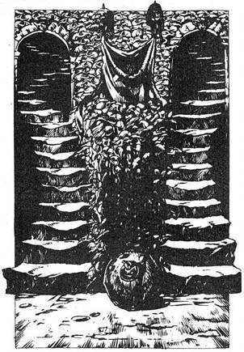
122.
Veled szemben két lépcsősor emelkedik, melyet patkánykoponyákból emelt korlát szegélyez. Fölmehetsz akár a bal oldali lépcsősoron - lapozz a 176-ra, akár a jobb oldali lépcsőn - lapozz a 384-re.
123.
A nyaklánc egy erőt adó amulett. Adj 1 ÜGYESSÉG és 1 ÉLETERŐ pontot pontjaidhoz, és folytathatod utad észak felé. Lapozz a 282-re.
124.
Felrántod a csapóajtót, és felrohansz a lépcsőkön. Fényes, lámpásokkal megvilágított szobába jutsz. Két Goblin élesíti kardját egy a padló közepére helyezett kövön. Meglepődnek egy pillanatra, amikor meglátnak, de hamar összeszedik magukat, és mindketten rád rontanak.
Első Goblin ÜGYESSÉG 5 ÉLETERŐ 4
Második Goblin ÜGYESSÉG 5 ÉLETERŐ 5
Mindegyik Harcsorozatban mindkét Goblin külön támad rád, de el kell döntened, a kettő közül melyikkel akarsz küzdeni. Támadd meg az általad kiválasztott Goblint, a szokásos módon. A másik ellen a szokásos kockavetéssel vesd be TÁMADÓERŐDET, de az mégha nagyobb is, mint az övé, nem fogod megsebesíteni. Úgy kell felfognod, hogy kivédted az ő csapását. Azonban ha az ő TÁMADÓEREJE a nagyobb, a szokásos módon megsebzett. Ha nyersz, lapozz a 81-re.
125.
Lábujjhegyen az ajtó fele lopakodsz, miközben Ivy továbbcsoszog. Tedd próbára SZERENCSÉD. Ha szerencséd van, lapozz a 69-re. Ha nincs szerencséd, lapozz a 139-re.
126.
A Barbár övén lógó zacskó üres, csak némi, ruhába csomagolt, fura kinézetű szántott húst találsz. Mit teszel?
Megeszed a szárított húst? Lapozz a 226-ra.
Otthagyod a húst, és a fülkébe mész
(ha eddig nem tetted meg)? Lapozz a 41-re.
Otthagyod a kamrát, és nyugatnak
indulsz? Lapozz a 83-ra.
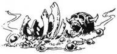
127.
Egyetlen kijáratot találsz a csarnokból, mégpedig egy csúszdát az északi falon. Úgy döntesz, hogy megpróbálod, és felmászol a csúszdára. Lágyan siklasz lefelé, és a hátadra esve egy újabb szobába érkezel. Lapozz a 90-re.
128.
A fülke végében néhány lépcsőfok vezet lefelé egy cellába. Pókhálók súrolják az arcod, miközben leereszkedsz. A pince egészen alacsony, a földet szemét és törmelék borítja. A szemközti falon egy boltív nyílik egy újabb, kristály világította alagútba. Jobbra tőled, hatalmas gombák nőnek a szemét tetején. Ha be akarsz lépni a boltív alatt, lapozz a 35-re. Ha megállsz, hogy egyél a gombából, lapozz a 233-ra.

129.
A kötelet a csáklyára csomózod, és áthajítod a falon. A csáklya beakad a kőbe, és mászni kezdesz felfelé. A fal tetején átkukucskálva egy óriási, dinoszauruszszerű szörnyet látsz egy homok borította gödörben. Kemény bőre tarkászöld színű, és izmos hátsó lábaira állva vagy tíz méterre magasodik. Hatalmas állkapcsában borotvaéles fogak sorakoznak, s csonttörő erővel csattannak össze,
ahogy a szörny összecsukja száját. A gödör túloldali falán egy széles dupla ajtó van, amely úgy tűnik, az egyetlen kijárat a labirintusnak ebből a részéből. Mit teszel?
Leereszkedsz a kötélen a gödör be, és
megküzdesz a Verembestiával? Lapozz a 349-re.
A gödörbe hajítod majomcsont amulettedet
(mármint, ha van ilyened)? Lapozz a 361-re.
A fal tetején ülve megpróbálod a Verembestiába
vágni a csáklyát? Lapozz a 167-re.
130.
A Hobgoblinok azonnal abbahagyják a küzdelmet. Nem értik, mit mondasz, és gonoszul vicsorítanak rád. Aztán kihúzva rövid kardjukat rád rontanak. Egyenként küzdjél meg velük.
Első Hobgoblin ÜGYESSÉG 7 ÉLETERŐ 5
Második Hobgoblin ÜGYESSÉG 6 ÉLETERŐ 5
Ha győzöl, lapozz a 9-re.
131.
A nyíl elzúg a fejed fölött, és a szemközti falba vágódik; még szerencse, hogy a padlón kuporogtál. Most, hogy a csapda kipattant, elhagyhatod a szobát azon az ajtón, amelyen beléptél. Visszaérve az alagútba, nyugatnak fordulsz. Lapozz a 74-re.
132.
Hallod, hogy a Gnóm így szól, - Egy korona és két koponya -‚ s rögtön egy fehér villám lövell ki a zárból a melledbe, és elveszíted eszméletedet. Dobj egy kockával, adj 1-et a számhoz, és vond le ÉLETERŐDBŐL. Ha életben maradsz, magadhoz térsz, és a Gnóm felszólít, hogy próbáld meg újra. Tudod, hogy az egyik drágakövet a helyes résbe tetted, de vajon melyiket? Sóhajtasz, és habozva egy új kombinációval próbálkozol.
A B C
Smaragd Gyémánt Zafír Lapozz a 16-ra.
Gyémánt Zafír Smaragd Lapozz a 392-re.
Zafír Smaragd Gyémánt Lapozz a 177-re.
Smaragd Zafír Gyémánt Lapozz a 287-re.
Gyémánt Smaragd Zafír Lapozz a 132-re.
Zafír Gyémánt Smaragd Lapozz a 249-re.
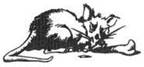
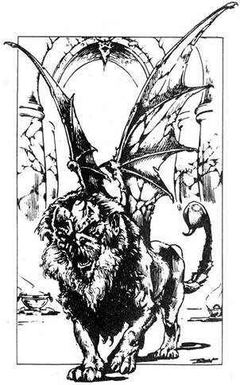
133.
A rejtélyes hang újra felhangzik, csak most tele meg vetéssel és gúnnyal. Tehát egy nyafogó stréber van itt közöttünk? Na lám? - csúfol a hang. - A gazdámnak külön ajándéka van a számodra, te undorító csúszómászó. - Hirtelen víz kezd ömleni a szobába a mennyezeten levő lyukon keresztül. A víz hamarosan a bokádig ér, és nincs sehol kiút. Visszamész az ajtóhoz, de az zárva van, ám te kétségbeesetten döngeted a válladdal. Dobj két kockával. Ha az összeg akkora, vagy kisebb, mint ÜGYESSÉG pontod, lapozz a 178-ra. Ha nagyobb, mint ÜGYESSÉG pontod, lapozz a 17-re.
134.
Az alagút egy tágas szobába vezet, amelynek tetejét márványpillérek tartják. Amint belépsz, egy különös vadat pillantasz meg jobbra. Oroszlánteste van, rajta sárkányszárnyszerű szárnyak, de feje mint egy szakállas öregemberé. Ha már olvastad a Csontvázharcos pergamenjén levő verset, lapozz a 222-re. Ha nem olvastad, lapozz a 247-re.
135.
Elhaladsz a Sziklahernyó odúja mellett, és hamarosan egy elágazáshoz érsz. Gyors pillantást vetsz a dél felé vezető alagútba, de nem látsz senkit sem közeledni. Gyorsítva lépéseidet, keletnek sietsz. Lapozz a 68-ra.
136.
Az ajtó egy újabb alagútba vezet, amely a távolban enyhén emelkedik. Miután egy ideig fölfelé gyalogolsz, az út kiegyenesedik, és hamarosan egy ajtót találsz a jobb oldali falban, amelyre egy leszáradt kezet szögeltek. Ha be akarsz nyitni az ajtón, lapozz a 210-re. Ha inkább továbbmész észak felé, lapozz a 78-ra.
137.
Ahogy végigmész az alagúton, csodálkozva látod, hogy egy jókora vasharang csüng alá a boltozatról. Ha megkongatod, lapozz a 220-ra. Ha inkább megkerülöd és továbbmész nyugatnak, lapozz a 362-re.
138.
A könyv oldalai össze vannak ragasztva, de középen egy kis bemélyedés van, épp akkora, hogy elférjen benne egy dugóval lezárt kis palack, amelyben tiszta folyadék van. Megmutatod Thromnak, aki kezét feltartva int, hogy ne is menj a közelébe vele; nyilvánvalóan nem bízik az ismeretlen dolgokban. Mit teszel:
Megiszod a folyadékot? Lapozz a 397-re.
Sebeidre kened a folyadékot? Lapozz a 75-re.
Kinyitod a vörös könyvet (ha eddig nem
tetted meg)? Lapozz az 52-re.
Otthagyod a könyvet meg a palackot, és Thrommal
együtt továbbmész északnak? Lapozz a 369-re.
139.
Menekülni próbálsz, de Ivy megperdül, és felkap egy törött széket. Dühös rád, és vadul támad. 2 ÉLETERŐ pontot vesztesz. Ha életben maradsz, sikerül kihúznod kardodat, és szembeszállsz vele.
Ivy ÜGYESSÉG 9 ÉLETERŐ 9
Ha győzöl, lapozz a 201-re.
140.
Megpróbálod kardod hegyét a smaragdszem alá bedugni. Legnagyobb meglepetésedre az érintésre a szem megremeg, és mérgező gázt lövell a szemedbe. A gáztól elájulsz, és hátrazuhansz, lerepülsz a bálványról, és a földre zuhansz. Kalandod itt véget ér.
141.
A Tükör Démon már majdnem teljesen rád telepszik, amikor minden erődet összeszedve még egyszer a tükörre csapsz kardoddal. Dobj két kockával. Ha az összeg akkora vagy kisebb, mint ÜGYESSÉGEDÉ, lapozz a 72-re. Ha az összeg nagyobb, lapozz a 96-ra.
142.
Balra az alagútnak egy új ága nyílik. Két testet látsz feküdni a földön magad előtt. Megállsz, és benézel az új alagútba, de nem látsz sem ajtót, sem élőlényt, s úgy döntesz, nem indulsz arra. Kivonod kardod, és oda mész, ahol a testek hevernek. Lapozz a 338-ra.
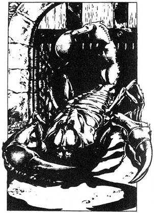
143.
Felkiáltasz a Törpének, hogy eressze be a Skorpiót, mert kész vagy megküzdeni vele. A faajtó lassan felemelkedik, és egy hatalmas fura, fekete Skorpió mászik be alatta a szobába. Kihúzod a kardod, és készen állsz, hogy megküzdj a gonosz teremtmény vastag ollóival és kivédd halálos szúrását.
Óriás Skorpió ÜGYESSÉG 10 ÉLETERŐ 10
A Skorpió mindkét csápjával támad, és mindkettő ellen mint külön teremtmény ellen kell harcolnod. Mindkét csáp 10-es ÜGYESSÉGGEL rendelkezik, és mindegyik Fordulóban külön támad rád, de el kell döntened, melyikkel harcolsz előbb. Támadj meg egy csápot, a szokásos módon. Most a másik csáp ellen a szokásos kockavetéssel vesd be TÁMADÓERŐDET. Sebet nem ejtesz, még akkor sem, ha a te TÁMADÓERŐD nagyobb; vedd úgy, hogy kivédted támadását. Ha a csáp TÁMADÓEREJE a tiédnél nagyobb, az természetesen megsebzett téged. Ha a Skorpió TÁMADÓEREJE bármelyik fordulóban eléri a 22-t, lapozz a 2-re. Ha meg tudod ölni a Skorpiót anélkül, hogy TÁMADÓEREJE elérné a 22-t, lapozz a 163-ra.
144.
Az öreg még mindig mosolyogva néz, és csendesen azt mondja: - Tévedsz. - Lapozz a 85-re.
145.
A Törpét nem éri váratlanul lépésed. Ráadásul a korábbi megpróbáltatások miatt nem vagy olyan gyors, mint kéne, ezért könnyedén elkerüli ütésedet, és így szól: - Ha akarnám, most megölhetnélek, de vágyom rá, hogy megküzdjek veled, - Ledobja íját, és övéből csatabárdot húz elő. Fáradtságod ellenére csak a bosszúra gondolsz.
Törpe ÜGYESSÉG 8 ÉLETERŐ 6
Minden Fordulóban 2-t le kell vonnod TÁMADÓERŐDBŐL állapotod miatt. Ha győzöl, lapozz a 28-ra.
146.
Nem bírod tovább visszatartani a lélegzeted, és a felszínre buksz levegőért. Szerencsére a Troglodyták eltűntek, és nem látnak. Kimászol a folyóból, és a hídon átkelsz az északi partra. Ami Élelmed maradt, mind ehetetlen. Egy nagy barlangon keresztül haladsz tovább, amíg végül meg nem látsz egy alagutat a szemközti falban. Ezen haladsz, míg egy súlyos, bezárt faajtóhoz nem érsz. Ha van vaskulcsod, lapozz a 86-ra. Ha nincs, lapozz a 276-ra.
147.
A bambuszban levő víz felfrissít. 1-et adj ÉLETERŐDHÖZ. Olyan anyagot is tartalmaz, amely lehetővé teszi, hogy az olvadáspontot is baj nélkül elviseld. Eldobod a bambuszt, és jókedvűen mész tovább észak felé. Lapozz a 182-re.
148.
Sehová nem mehetsz, csak lefelé a lépcsőn, az ugató kutyák felé. Leérsz, és kivont karddal szembefordulsz a két hatalmas, fekete Őrzőkutyával, amelyek egyenként ugranak rád.
Első Őrzőkutya ÜGYESSÉG 7 ÉLETERŐ 7
Második Őrzőkutya ÜGYESSÉG 7 ÉLETERŐ 8
Ha győzöl, lapozz a 175-re. Az első Őrzőkutya megölése után Elmenekülhetsz, ha keletnek rohansz az alagútban. Lapozz a 315-re.

149.
Elengeded a kötelet, és hallod, hogy az a verem aljára hull. A Barbár káromkodik, fenyegetőzik, hogy megöl, ha utatok még egyszer keresztezi egymást. Hátralépsz, és nekifutva ugrasz. Biztonságosan érsz földet a gödör túloldalán, és továbbmész nyugat felé. Távolabb az alagútban a kőpadlón az egyik kőkocka megbillen, és egy szerkezet elengedi a mennyezet egyik meglazult szikladarabját. Felnézel, és látod, hogy mindjárt összezúz. Tedd próbára SZERENCSÉD. Ha szerencséd van, lapozz a 70-re. Ha nincs szerencséd, lapozz a 353-ra.
150.
Mivel volt annyi eszed, hogy nem a kardforgató kezedet dugtad a gödörbe, a csápok okozta sérülés nem komoly. 1 pontnyi ÜGYESSÉGET vesztesz. Visszanyúlsz a gödörbe, és kihúzod a csáklyát meg a bőrzacskót. A zacskóban egy piciny rézcsengőt találsz. Elrakod új szerzeményeidet, és továbbmész észak felé. Lapozz a 292-re.

151.
Ahogy megérinted a bálvány smaragdszemét, nyekergő hangot hallasz alulról. Lenézel, és döbbenten látod, hogy a két kitömött madár felrepült. Szárnyuk rángó mozdulatokkal csapdos, és hamarosan fejed fölött pillantod meg őket. A madarak láthatóan támadni akarnak. Egyenként küzdesz meg a Repülő Őrökkel, de ÜGYESSÉGED 2-vel csökken ebben a harcban, mert kényelmetlen helyzetben vagy.
Első Repülő Őr ÜGYESSÉG 7 ÉLETERŐ 8
Második Repülő Őr ÜGYESSÉG 8 ÉLETERŐ 8
Ha győzöl, lapozz a 240-re.

152.
A Törpe gratulál, helyesen találtál. Közli, hogy a Próba második lépcsője következik. Egy fonott kosarat húz elő, és megmondja, hogy egy kígyó van benne. Felemeli a tetejét, és a kígyó a földre hull; egy kobra az, s támadásra készen felemeli a fejét. A Törpe azt mondja, hogy a reakciódra kíváncsi. Puszta kézzel kell megragadnod a kobrát, pontosan a feje alatt, elkerülve halálos marását. Lekuporodsz a földre, izmaid megfeszülnek, ugrásra készen vársz. Dobj két kockával. Ha az összeg akkora vagy kevesebb, mint ÜGYESSÉGED, lapozz az 55-re. Ha az összeg nagyobb, mint ÜGYESSÉGED, lapozz a 202-re.
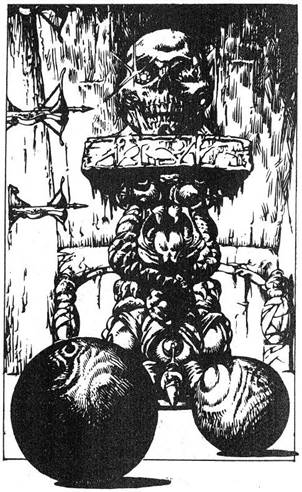
153.
Az ajtó egy kis szobába nyílik, amelyben egy márványtalapzaton egy emberi koponya van, szemében rubinok. A bal oldali falon egy sor kifeszített íj van, és az ajtó mellett két kis fagolyó hever a földön. Mit teszel:
Bemész a szobába, és fölveszed a
koponyát? Lapozz a 390-re.
Az egyik golyót a koponyára hajítod az
ajtóból? Lapozz a 371-re.
Becsukod az ajtót, és továbbmész nyugat felé,
magaddal víve a golyókat? Lapozz a 74-re.
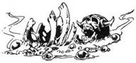
154.
Lerohansz az alagútba, és hamarosan eléred a Barbárt. Elmondod neki, hogy a keleti átjáró zsákutca. Csendben bólint, hogy érti, s megindul veled nyugat felé. Lapozz a 22-re.
155.
A lány versének szavai átvillannak az agyadon: „Mikor a folyosó földjét víz mossa, ne vonulj rögtön vissza...” Természetesen ez az a hely, ahol akarata szerint vízbe kell merülnöd. Most el kell döntened, mit tegyél. Ha beugrasz a vízbe, lapozz a 378-ra. Ha inkább visszamész az alagútban, lapozz a 322-re.

156.
A kis lemez könnyen eltolható, és egy szobába kukkantasz be, amelyben az ajtó mögött mély gödör tátong. A szemközti falon két vashorog lóg, az egyiken egy tekercs kötél függ. Ha úgy gondolod, hogy kinyitod az ajtót és átugrod a gödröt, lapozz a 208-ra. Ha inkább továbbmész északnak az alagútban, lapozz a 326-ra.
157.
Az ékszeres ládika könnyedén nyílik, és belül fekete bársonyon egy hatalmas gyöngy hever. 1 ponttal növelted SZERENCSÉD. Miután zsebre vágtad a gyöngyöt, átverekszed magad a pókhálókon. Lapozz a 310-re.
158.
A kancsót ajkadhoz emeled, és belekortyolsz az italba. Annyira éget, hogy elejted a kancsót, és fájdalmadban a torkodhoz kapsz. Savat nyeltél! 1 ponttal csökkent ÜGYESSÉGED és 4-gyel ÉLETERŐD. Ha életben maradsz, lapozz a 275-re.
159.
Reakcióid még lassúak a szervezetedbe került méregtől, és bár megpróbálod átugrani a kinyújtott nyelvet, lábad cserbenhagy. A nyúlós nyelv a lábadra tekeredik, feldönt, és a medence felé húz. Kardod kihullott kezedből, és kezdesz megrémülni. Ha van tőröd, lapozz a 294-re. Ha nincs, lapozz a 334-re.

160.
Bár kardod és páncélod súlya lehúz, biztonságosan talajt érsz a gödör túloldalán. Nem vesztegetsz több időt itt, keletnek indulsz. Lapozz a 237-re.
161.
Elnyomulsz a két Leprechaun manó mellett, és ahogy továbbmész északnak, a füledbe cseng gúnyos nevetésük. Távolabb az alagútban megállsz pihenni és ellenőrizni holmijaidat. Ha volt drágaköved, eltűnt, a Leprechaun, amely a hátadra ugrott, ellopta őket a hátizsákodból. Megátkozod a lopós Leprechaunokat, és folytatod utad észak felé. Lapozz a 29-re.
162.
Az alagút fényénél elmozdítod a doboz tetejét, és egy vaskulcsot meg egy nagy drágakövet találsz benne. Egy zafírt. 1 pontot adjál SZERENCSÉDHEZ. A tárgyakat óvatosan a hátizsákodba teszed, és ismét csak észak felé indulsz. Lapozz a 142-re.
163.
A Törpe az erkélyről gratulál győzelmedhez. Egy zsákot dob az arénába, és azt tanácsolja, hogy lazíts, hogy visszanyerd erődet a Próba végső szakaszára. Aztán távozik, mondván, hogy körülbelül tíz perc múlva visszatér. Kinyitod a zsákot, egy kancsó bort és egy főtt csirkét találsz benne. Ha megeszed a Törpe ajándékát, lapozz a 363-ra. Ha inkább leülsz és várod, hogy visszatérjen, lapozz a 302-re.

164.
Ahogy továbbmész, ismét vízcseppek kezdenek hullani az alagút mennyezetéről. Nedves lábnyomokat látsz, ugyanattól a csizmától erednek, amelyet korábban követtél. Nyugat felé tartanak, s egy zárt vasajtóhoz vezetnek a jobb oldali falon. Ha ki akarod nyitni az ajtót, lapozz a 299-re. Ha inkább továbbmész nyugatnak, lapozz a 83-ra.
165.
A lakaton egy nyílás van, amelybe belehelyezed az érmét. A lakat azonnal kinyílik, és le tudod venni a láncot a gólyalábakról. A válladra veszed őket, és újra elindulsz észak felé. Lapozz a 234-re.
166.
Ahogy megérinted a bálvány smaragdszemét, nyekergő hangot hallasz alulról. Lenézel, és döbbenten látod, hogy a két kitömött madár felrepült. Szárnyuk rángó mozdulatokkal csapdos, hamarosan föléd kerülnek, és láthatóan támadni akarnak. Egyenként küzdesz meg a Repülő Őrökkel, de ÜGYESSÉGED 3-mal csökken ebben a harcban, minthogy kényelmetlen helyzetben vagy.
Első Repülő Őr ÜGYESSÉG 7 ÉLETERŐ 8
Második Repülő Őr ÜGYESSÉG 8 ÉLETERŐ 8
Ha győzöl, lapozz a 11-re.
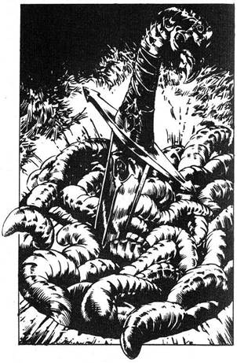
167.
Megforgatod fejed fölött a csáklyát, és a mélybe veted a bestiára. A Verembestia vaskos állával keményen ráharap a csáklyára, aztán hátrarántja a fejét. Mivel még fogod a kötelet, leránt, és a gödör aljára zuhansz. ÉLETERŐD 4 ponttal csökken. Ha életben maradsz, lapozz a 203-ra.
168.
Elhúzod a reteszt, és benyomod a súlyos kőajtót. Egy tágas barlangban találod magad. Félhomály van, de ahogy a szemed kezd hozzászokni a sötéthez, látod, hogy a falakat nedves zöld alga bontja. A padlót szalmával szórták fel. Meleg, párás a levegő, és lágy, zümmögő hang tölti meg. Óvatosan átmész a szalmán a barlang sarka felé, ahol úgy látod, hogy egy viszonylag nem túl mély gödör van. Elővigyázatosan benézel a gödörbe, és undorodva látod, hogy tekergő férgekkel van tele, némelyikük félméteresre is megnőtt. Háborgó gyomorral éppen el akarsz fordulni, amikor észreveszed, hogy egy tőr körül tekeregnek, amelynek hegye beszorult a gödör fenekén levő résbe. A markolatot fekete bőr borítja és opálok díszítik, a penge egy különös vörösesfekete, fényes fémből készült, amilyent még soha nem láttál. Szeretnéd meg érinteni a tőrt, de ehhez kezedet be kell dugnod a tekergő férgek közé. Ha benyúlsz a tőrért, lapozz a 94-re, ha undorodva megfordulsz és távozol a barlangból, lapozz a 267-re.
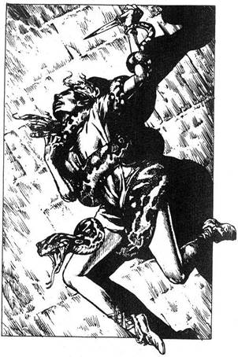
169.
Gyanakodva néz végig, amikor felajánlasz egy adagot Élelmiszeredből. De az éhség felülkerekedik félelmén, és a szájába tömi az ételt. Megkérdezed, mi dolga van az alagutakban, és ő elmagyarázza, hogy az egyik Próbamesternek - Szukumvit báró egyik labirintus-ellenőrének a szolgája. Elmondja neked, hogy szökni akart, de senki sem hagyhatja el a labirintust, mert akkor annak titkai napvilágra kerülhetnének. Elmondod neki, hogy a Bajnokok Próbájának résztvevője vagy, és minden segítségért hálás lennél. Az állát dörzsölve feléd fordul, és így szól: - Jótett helyében jót várj. Minden, amit tudok, az, hogy az északi alagútban van egy madárdémon alakú faragott faszék. Egy rejtett üreg van a szék karfájában, benne egy teli üvegfiola. Ez a Doppelganger Ital. De most már ideje, hogy menjek. Jó szerencsét. Remélem, még találkozunk, s nemcsak itt, e végtelen alagutakban. A férfi ezzel elcsoszog, és te tovább folytatod utadat nyugat felé. Lapozz a 109-re.
170.
Ahogy a fekvő alak felé közeledsz, látod, hogy a lány az, vetélytársaid egyike, és az életéért küzd egy hatalmas Boa Constrictor csonttörő szorításában. Ha segíteni akarsz neki, lapozz a 281-re. Ha inkább visszamész az alagútban, amely északnak vezet, s a lányt magára hagyod a Boával, akkor lapozz a 192-re.
171.
A kitáruló ajtó mögött kis szoba van, de mielőtt felfognád, mi történik, már zuhansz is - egy gödör volt az ajtó mögött, amit nem vettél észre. Jól megütöd magad, és arcod eltorzul a fájdalomtól. 4 pontot veszítesz ÉLETERŐDBŐL. A falak durván vésettek, bőven van kezednek, lábadnak kapaszkodója, és könnyen ki tudsz mászni. Szidod magad hevességedért, és megfogadod, hogy a jövőben óvatosabb leszel, amikor belépsz valahová. Benn a szobában két vashorgot látsz az ajtóval szemben lévő falon. Egy tekercs kötél lóg le egyikükről. A hátizsákodba rakod, átugorva a gödröt távozol a szobából, s északnak fordulsz. Lapozz a 326-ra.
172.
Eszedbe jut a leírás, amelyet a gonosz Vérvadról és a medencéjéből áradó mérges gázról olvastál. Ingujjaddal eltakarod szád, és kivont karddal lépsz előre, vigyázva a szörny nyelvére. Ahogy a medence széléhez érsz, a fenevad előreveti magát, és kilövi nyelvét, de készen állsz, és kardod egyetlen csapásával levágod a nyelvet. A szörny nyög fájdalmában, és kétségbeesetten támad, megpróbál vérborította állkapcsába kapni. Förtelmes arca felé vagdosol, hogy eltaláld valódi szemeit.
Vérvad ÜGYESSÉG 12 ÉLETERŐ 10
Mihelyt megnyerted a második Fordulót, lapozz a 278-ra.
173.
A hideg víz felfrissít. Egy Tündérport tartalmazó forrásból jön. 1 ÉLETERŐ és 2 ÜGYESSÉG pontot adjál pontjaidhoz. Ha eddig nem tetted meg, ihatsz a másik kútból - lapozz a 337-re, vagy továbbmész északra - lapozz a 368-ra.
174.
Miközben az ajtó felé hátrálsz, a zúgó hang erősödik, és kétségbeesetten forgatod a fejed, hogy felfedezd forrását. Felnézel, és egy Óriáslégy fura, fekete árnyékát pillantod meg magasan a barlang falán, amint egy beugróból előtűnik. Ahogy közelebb ér, akkor látod, hogy legalább másfél méter hosszú. Áttetsző szárnya vibrál, ez okozza a fülsiketítő zajt, amelyet hallasz. Hat szőrös, fekete lábát kinyújtja, hogy megragadjon. Sokszögű szeme alatt a hosszú, fényes, fekete szívócső vészterhesen mered előre. Elloptad az Óriáslégy kincsét költőhelyéről, és viselned kell a következményeket. Tedd próbára SZERENCSÉD. Ha szerencséd van, lapozz a 39-re. Ha nincs szerencséd, lapozz a 350-re.
175.
Az egyik Őrzőkutya nyakörvén egy kis fémkapszula van. Letekered a tetejét, és egy kis fogat találsz benne. Leprechaun-fog, amely szerencsét hoz. 2-vel nőtt SZERENCSE pontjaid száma. Zsebre vágod a fogat, és megindulsz keletre az alagútban. Lapozz a 315-re.
176.
Óvatosan lépkedve lassan fölmész a lépcsőn. Hamarosan baj nélkül eléred a tetőt. Az Új alagútban haladsz tovább. Lapozz a 277-re.
177.
Hallod, hogy a Gnóm így kiált. Három korona - s abban a pillanatban a zár kipattan. Ahogy a súlyos ajtók lassan kinyílnak, a Gnóm előreugrik, és egy üveggolyót hajít a lábadhoz. Zöld gáz szabadul föl a törött üvegből. Megpróbálod nem belélegezni. Tedd próbára SZERENCSÉD. Ha szerencséd van, lapozz a 243-ra. Ha nincs szerencséd, lapozz a 103-ra.
178.
Az ajtó nem tud ellenállni dühödt rohamaidnak. A középső panel bereped, és most már akkora lyukat tudsz törni rajta rúgásaiddal, amelyen ki tudod préselni magad. Csuromvizesen, de boldogan, hogy túlélted ezt a megpróbáltatást, újra elindulsz észak felé. Lapozz a 344-re.
179.
Ahogy a Törpére vetitek magatokat, ő két kézidárdát húz elő övéből, és felétek hajítja. Mindkettőtöket a lábatokon talál el, és azonnal megbénultok a hegyén levő méregtől. 2 ÉLETERŐ pontot veszítesz. Mintha csak a padlóhoz lennél ragasztva, tehetetlenül nézed, ahogy a Törpe kihúzza a dárdát a combodból. Megkérdezi, hogy most már hajlandó vagy-e alávetni magad a Próbának. Nehezen bólintasz. A méreg hatása lassan elmúlik, és újra tudsz mozogni. A Törpe int, hogy kövesd. Thromnak azt mondja, hogy várjon rá, míg visszatér. Kinyit egy titkos ajtót a kamra falán, és egy kis, kör alakú szobába vezet. Miután bezárja az ajtót, két csontkockát nyújt át neked, hogy dobd őket a padlóra. Egy hatost és egy kettest dobsz, az összeged nyolc. A Törpe azt mondja, dobjál újra, de most meg kell jósolnod, hogy az összeg nagyobb vagy kisebb lesz-e nyolcnál, vagy épp annyi? Ha szerinted ugyanannyi lesz, lapozz a 290-re. Ha úgy gondolod, hogy az összeg kisebb lesz, mint 8, lapozz a 191-re. Ha úgy, hogy az összeg nagyobb lesz, mint 8, lapozz a 84-re.
180.
Ahogy előreveted magad a Vérvadra, hirtelen úgy érzed, hogy elájulsz. A medencéből mérgező gáz árad, és eszméletlenül zuhansz a földre. Tedd próbára SZERENCSÉD. Ha szerencséd van, lapozz az 53-ra. Ha nincs szerencséd, lapozz a 272-re.
181.
Az alagút egy márványpadlójú terembe vezet, a boltozatot pillérek tartják. Lépteid kopognak a padlón, és visszhangoznak a teremben. A hátadon végigfut a hideg, úgy érzed, mintha láthatatlan szemek figyelnének. Nem tudod, hogy az egyik oszlop mögött egyik vetélytársad lapul. A Nindzsa az, a sötét ruhába öltözött gyilkos. Hangtalanul előlép az oszlop mögül, és egy csillagformájú fémlemezt hajít a hátadba. Egy belső hang ösztönösen azt mondja, bukj le. Tedd próbára SZERENCSÉD. Ha szerencséd van, lapozz a 312-re. Ha nincs szerencséd, lapozz a 45-re.
182.
A hőmérséklet tovább emelkedik, és már iszonyatosan izzadsz. Ahogy küzdesz tovább, a hőség nő, míg már úgy érzed, hogy elviselhetetlen és elájulsz. Ha ittál a bambuszban talált folyadékból, lapozz a 25-re. Ha nem álltál meg inni, lapozz a 242-re.
183.
Felcsatolod a gólyalábakat, és néhány bizonytalan lépést teszel. Önbizalmad nő, és hamarosan úgy érzed, végig tudsz menni az iszapon. Füst száll fel a gólyalábak aljából, ahogy az iszap kezdi azokat szétmarni. Nyugodtan továbbmész, és hamarosan ismét szilárd talaj van alattad. Sajnos a gólyalábakat iszap borítja, és el kell dobnod őket. Észak felé indulsz, és hamarosan egy elágazáshoz érsz. Ha nyugatnak akarsz menni, lapozz a 386-ra. Ha inkább továbbhaladsz észak felé, lapozz a 218-ra.
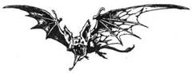
184.
A Barbár, aki elmondja, hogy Thromnak hívják, a dereka köré tekeri a kötelet, és kezedbe nyomja annak szabad végét. Miközben meggyújtja a fáklyát, látod a bizalmatlanságot a szemében. Lassan átmászik a verem peremén, míg te megfeszíted magad, és erősen tartod a kötelet. Míg lassan leereszted, látod a Throm fáklyája által megvilágított verem sima oldalát. Végül a Barbár leér a fenékre, és felkiált, hogy egy újabb alagút indul onnét északnak. Azt mondja, hogy kösd a kötelet egy kiálló sziklára, és ereszkedj le magad is. Ha a Barbárral maradsz, és északra indulsz az alsó alagútban, lapozz a 323-ra. Ha el akarod hagyni és átugrasz a verem felett, lapozz a 149-re.

185.
A Troglodytákat túlságosan elfoglalja a törzsi tánc ahhoz, hogy meghallják kardod csörrenését, és továbblopódzol. Amikor úgy véled, hogy már elég messzi vagy tőlük, felállsz, és keresztülrohansz a barlangon. Magad előtt egy föld alatti folyót látsz, amely keletről nyugatra folyik a barlangon át és egy fahíd keresztezi. Hangot hallasz, és hátrapillantva rájössz, hogy fölfedeztek. A Troglodyták űzőbe vettek. Ha fel akarsz rohanni a hídra, lapozz a 318-ra. Ha inkább a folyóba veted magad, lapozz a 47-re.
186.
Lassan és elővigyázatosan mászol föl a bálványra. Épp meg akarod ragadni széles fülét, amikor a lábad hirtelen megcsúszik. Tedd próbára SZERENCSÉD. Ha szerencséd van, lapozz a 260-ra. Ha nincs szerencséd, lapozz a 358-ra.
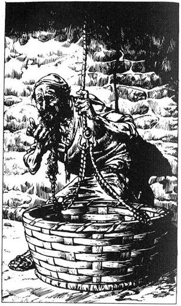
187.
Az alagút élesen jobbra kanyarodik, és a sarokban egy hosszú szakállú kis öregembert látsz, aki egy széles fonott kosár mögött rejtőzködik. A kosárhoz egy kötelet erősítettek, amelynek másik vége belevész a mennyezetbe. Az öreg ijedten így szól: - Ne támadj meg engem, idegen. Nem jelentek veszélyt a számodra. Azért vagyok itt, hogy segítsek neked. Ha lennél olyan kedves, és valami kis jutalmat ajánlanál, szívesen felhúználak a kosárban a felső szintre. És higgyél nekem, ott kéne lenned. - Ha adnál valamit az öregnek hátizsákod tartalmából szolgálataiért, lapozz a 360-ra. Ha inkább elmész mellette, és továbbhaladsz az alagútban, lapozz a 280-ra.
188.
Az alagút enyhén lejteni kezd, és végezetül egy mély medencéhez vezet, amelyet körülfognak az alagút falai. Ha emlékszel még a szellemlány versére, lapozz a 155-re. Ha nem találkoztál a szellemlánnyal, lapozz a 224-re.
189.
Az Ork láncos buzogányának tüskéje fájdalmasan mélyed a bal combodba. 3 ÉLETERŐ pontot veszítesz. Hátratántorodsz, de időben visszanyered egyensúlyodat, és véded magad. Az alagút Szerencsére túl keskeny ahhoz, hogy mindkét Ork egyszerre támadjon. Egyenként küzdesz meg velük.
Első Ork ÜGYESSÉG 5 ÉLETERŐ 5
Második Ork ÜGYESSÉG 6 ÉLETERŐ 4
Ha győzöl, lapozz a 257-re.
190.
Egész tested vadul remeg, és képtelen vagy megakadályozni, hogy elveszítsd eszméleted. 3 ÉLETERŐ pontot veszítesz. Ha életben maradsz, lapozz az 50-re.
191.
Dobj két kockával. Ha az összeg kisebb, mint 8, lapozz a 152-re. Ha az összeg nagyobb, vagy épp 8, lapozz a 121-re.

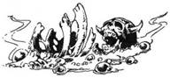
192.
Ahogy mész az alagútban, egy vasrácsot pillantasz meg a földön. Ha úgy gondolod, hogy megállsz és felemeled, lapozz a 120-ra. Ha szívesebben mész tovább, lapozz a 292-re.
193.
A sav keresztülmarja a gyomorfaladat, és az életfontosságú szerveidet eszi. Eszméletlenül esel össze, és többé nem térsz magadhoz. Kalandod itt véget ér.
194.
Az alagút falán levő kőpárkányon két poros, bőrkötéses könyvet látsz. Throm egy morgással fejezi ki megvetését az írott szó iránt, és sürget, hogy hagyd a könyveket, igyekezzetek tovább. Mit teszel:
Kinyitod a vörös bőrbe kötött
könyvet? Lapozz az 52-re.
Kinyitod a fekete bőrbe kötött
könyvet? Lapozz a 138-ra.
Továbbmész észak felé az
alagútban? Lapozz a 369-re.
195.
Előrántod kardodat, és az öregre veted magad. Ő felemeli bal karját, és hirtelen láthatatlan falnak ütközöl, - Ne légy bolond, hatalmam nagy - mondja nyugodtan. Ha nem hiszel nekem, jól figyelj. A semmiből egy repülő ököl tűnik fel, és mielőtt elhajolhatnál, az arcodba csap. 1 ÉLETERŐ pontot veszítesz. Megrázod fejedet, és az álladat dörzsölöd. Úgy tetszik, nincs más választásod, mint válaszolni a kérdéseire. Lapozz a 382-re.
196.
Épp időben emeled föl a pajzsod, mert egy tucatnyi tüske csapódik bele, amelyeket a Manticore a farkából lőtt ki és a szívednek irányzott. A pajzsod felfogta őket, és nem esett bántódásod. Fürgén előhúzod kardodat, és a Manticore-ra támadsz.
Manticore ÜGYESSÉG 11 ÉLETERŐ 11
Ha győzöl, lapozz a 364-re.

197.
Szerencsére a hőmérséklet süllyedni kezd, és hamarosan ismét csaknem hűvös van. Az alagút bal oldali falán egy zárt ajtó van. Kis vaslemezt találsz rajta, amely valószínűleg félrecsúsztatható. Mit teszel?
Megpróbálod kinyitni az ajtót? Lapozz a 171-re.
Megpróbálod elcsúsztatni a
vaslemezt? Lapozz a 156-ra.
Továbbmész az alagútban észak
felé? Lapozz a 326-ra.
198.
Mihelyt a gáz szétoszlott, visszamész a ládához, és belenézel. Egy nyaklánc hever a alján, de valaki már kivette a foglalatból a követ. Ez annyira felbosszant, hogy a földre hajítod a láncot, és kisietsz a szobából az alagútba. Lapozz a 230-ra.
199.
Túl sok az íj, hogy elkerülhesd lövésüket. Dobj egy kockával, hogy meghatározd, hány nyílvessző fúródik testedbe, és vonj le 2 ÉLETERŐ pontot mindegyikért. Ha életben maradsz, sokáig pihensz itt, hogy visszanyerd erődet. 1 SZERENCSE pontot veszítesz. Amikor végül eléggé erősnek érzed magad, hogy továbbhaladj, távozol a szobából, és továbbmész nyugat felé az alagútban. Lapozz a 74-re.
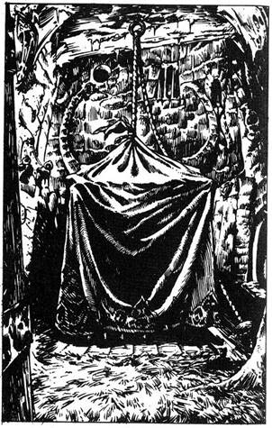
200.
Az ajtó egy szalmával borított padlójú kis szobába nyílik. A szoba közepén egy széles, letakart, vagy két méter magas ketrec áll. A takaró tetején egy zsinór van, amely egy a boltozathoz erősített gyűrűn át lelóg a padlóra. Ha fel akarod húzni a takarót, lapozz a 321-re. Ha inkább elhagyod a szobát, és továbbmész észak felé az alagútban, lapozz a 316-ra.
201.
Átkutatod az Ivy szobájában lévő szekrényeket és dobozokat, de egy öreg csontdarabon kívül semmit sem találsz. A kamra keleti falán egy ajtó van, és úgy döntesz, erre távozol és ha óhajtod, magaddal viszed a csontot. Kilépve egy újabb alagút szájánál találod magad. Lapozz a 305-re.
202.
A kobra gyorsabb, mint te vagy, és csuklyás fejével előrecsap, hogy megmarjon. Tedd próbára SZERENCSÉD. Ha SZERENCSÉD van, lapozz a 18-ra. Ha nincs szerencséd, lapozz a 42-re.
203.
Nagy nehezen lábra állsz, és előhúzod a kardod. Ideje, mert a félelmetes bestia már egészen közel van. Életed egyik legkeményebb harca vár rád.
Verembestia ÜGYESSÉG 12 ÉLETERŐ 15
Ha győzöl, lapozz a 258-ra.
204.
Az oszlop tetején egy láthatatlan rugós lemez van, és mihelyt visszateszed a koponyát, a szerkezet működésbe lép. Az íjak nyílvesszőkkel árasztják el a szobát. Tedd próbára SZERENCSÉD. Ha szerencséd van, lapozz a 131-re. Ha nincs szerencséd, lapozz a 199-re.
205.
Miközben a Leprechaunok után futsz, újabb nevetést hallasz, ez alkalommal magad mögül. Hátranézel, és hat újabb Leprechaun bújik elő az alagút falának egy rejtekajtajából. Hirtelen egy újabb Leprechaun veti magát a hátadra a mennyezeti párkányról. Lerázod magadról, kardot rántasz, mire a Leprechaunok még hangosabban nevetnek. Ha meg akarod támadni őket, lapozz a 306-ra. Ha inkább elmész mellettük, lapozz a 161-re.

206.
Cseppkövek hullanak mindenütt körötted, de nincs elég erőd, csak kúszni tudsz a boltív felé. Hirtelen egy kart érzel a derekad körül, amint megragad, és rájössz, hogy Throm visz téged. Letesz egy biztonságos helyre az alagútban, és ellátja sebeidet. Úgy döntesz, hogy eszel valamit, hogy visszanyerd erődet, és Thromnak is adsz egy adagot, hálából, hogy megmentett. Elnézésed kéri, hogy ilyen kőzuhatagot okozott, és kezet nyújt. A fájdalom ellenére elmosolyodsz, és megrázod a kezét. Amikor végül összeszeded magad, felállsz, keletnek indulsz Throm vezetésével. Lapozz a 60-ra.
207.
Leveszed az inget, és kettétéped. Mindkét lábadat betekered, hogy valami védelmet nyújtson, és óriási léptekkel nekivágsz a maró iszapnak. Mihelyt szilárd talajt érzel a lábad alatt, kapkodva levágod magadról kardoddal az égető ingdarabokat. Azonban némi iszap így is beette magát a sarkadnál. 3 ÉLETERŐ pontot veszítesz. Újra északnak indulva egy kereszteződéshez érsz. Ha nyugatnak akarsz menni, lapozz a 386-ra. Ha továbbmész észak felé, lapozz a 218-ra.

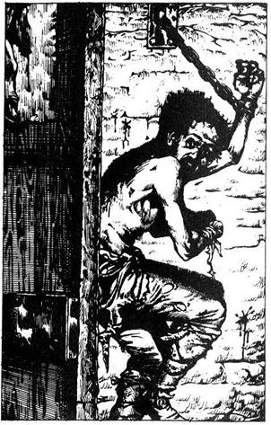
208.
Az ajtó kipattan, hátralépsz, és átugrod a vermet. A kötelet a hátizsákodba teszed, és a vermet újra átugorva távozol a szobából, majd továbbmész észak felé. Lapozz a 326-ra.
209.
Rémülten tapasztalod, hogy nemcsak elázott és ehetetlenné vált az összes élelmiszered, hanem az egyik kincs is hiányzik, amit találtál. Húzz ki valamit Felszerelési tárgyaid közül: vagy az egyik ékkövet, vagy az egyik italt. Óvatosan minden megmaradt tulajdonod visszarakod a táskába, és újra megindulsz északnak. Lapozz a 356-ra.
210.
Belépsz a szobába, ahol egy szakadt ruhás férfi áll, bal karjával a falhoz láncolva. Látod, hogy a jobb keze hiányzik, és rájössz, hogy az lehetett az ajtóra szögezve. Kegyelemért könyörögve hátrál, ameddig láncai engedik. Ha meg akarod szabadítani láncaitól, lapozz a 27-re. Ha inkább otthagyod és továbbmész északra, lapozz a 78-ra.
211.
Kiszabadítod magad Ivy szorításából, és előhúzod a kardodat. Ivy egy törött zsámolyt ragad fel fegyvernek.
Ivy ÜGYESSÉG 9 ÉLETERŐ 9
Ha győzöl, lapozz a 201-re.
212.
Keményen megmarkolod a kötelet, és hátralépsz, hogy legyen helyed nekifutni. Azonban a homályos megvilágításban nem veszed észre, hogy valaki csaknem kettévágta a kötelet pont a fölött a rész fölött, ahol fogod. Ahogy átlendülsz a verem fölött, a kötél hirtelen elszakad, és rémülten felsikoltva hullasz alá a mélységbe. Lapozz a 285-re.
213.
Az alagút hamarosan kettéválik. A nyugati ágból zúgó hangot hallasz. Ha arra akarsz menni, hogy megtudd, mi okozza a zajt, lapozz a 108-ra. Ha inkább továbbmész észak felé, lapozz a 14-re.
214.
Ahogy mész, egy vörös vonalat látsz az alagút földjén és egy figyelmeztető táblát a falon, amely így szól: „Fegyvert tilos ezen a ponton átvinni,” Ha leteszed a fegyvereidet, mielőtt továbbmennél északnak, lapozz a 389-re. Ha nem törődsz a figyelmeztetéssel és továbbra is magadnál tartod fegyvereid, lapozz a 181-re.
215.
Kardod könnyedén áthatol a spóragolyó vékony külső burkán. Sűrű barna spórafelhő csap ki a golyóból, és körülvesz. Némelyik spóra a bőrödhöz tapad, és rettenetes viszketést okoz. Nagy daganatok nőnek az arcodon és karodon, és a bőröd mintha égne. 2 ÉLETERŐ pontot veszítesz. Vadul vakarózva átléped a leeresztett golyót, és keletnek veszed az utad. Lapozz a 13-ra.
216.
Felismered a Medúza kígyóborította fejét, s lehunyod a szemed, hogy elkerüld halálos tekintetét, amely kővé változtatna. Ha be akarsz menni a ketrecébe, hogy csukott szemmel levágd, lapozz a 308-ra. Ha inkább csukott szemmel kihátrálsz a szobából, hogy továbbmenj észak felé, lapozz a 316-ra.
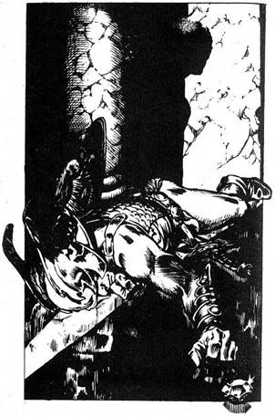
217.
Az átjáró lassan emelkedni kezd, könyörtelenül észak felé vezet. Egyetlen elágazást sem találsz. Nincs egy ajtó, de még egy beugró sem, amelyet megvizsgálhatnál, és kezdesz figyelmetlenebbé válni. Egy idő után olyan nemtörődöm leszel, hogy nem veszed észre a vékony zsineget, amely alacsonyan van kifeszítve az átjáróban. Csak amikor a lábad hozzáér, jössz rá, hogy hibáztál. A dörgő hang szinte fülsiketítő lesz, és az alagút homályából hirtelen egy hatalmas sziklatömb gurul feléd egyre gyorsabban. Leejtve pajzsodat, ha van
(1 ÜGYESSÉG pontot vesztettél), megfordulsz, hogy menekülj a közelgő szikla elől. Lapozz a 36-ra.
218.
Hamarosan egy kettős ajtóhoz érkezel, mely balról nyílik. Hallgatózol, de semmit sem hallasz. A kilincshez nyúlsz, az ajtó megnyikordul, és bekukucskálsz a nyíláson. Egy fegyveres harcos fekszik hason a földön. A szoba csupasz, alacsony, falai simák. A harcos halottnak látszik, akkor sem mozdul, amikor szólsz hozzá. Hatalmas drágakő, talán gyémánt fekszik kinyújtott karja előtt. Ha be akarsz lépni a szobába, hogy elvedd a gyémántot, lapozz a 65-re. Ha inkább továbbmész észak felé, lapozz a 252-re.

219.
Nem bírod tovább visszatartani a levegőt, és a felszínre emelkedsz. Balszerencsédre az egyik Troglodyta meglát, és riasztja társait. Tehetetlenül figyeled, ahogy az íjászok célba vesznek, és aztán végzetes hatással záporoznak rád a vesszők. Élettelen testedet elragadja a folyó a hegy rejtett mélyébe.
220.
Tompa „bamm” hallatszik, mintha halálharang kondulna. Körötted minden remegni látszik, és összeszorítod fogadat, ahogy a fejed rezegni kezd. Egész tested ráng, és a földre zuhansz. Remegsz, reszketsz, vonaglasz a padlón, ahogy vibrálás erősödik. 2 ÜGYESSÉG és 2 ÉLETERŐ pontot veszítesz. Kétségbeesetten gondolkodsz, hogyan hallgattathatnád el a harangot. Mit teszel:
Olyan hangosan sikoltasz, ahogyan csak
tudsz? Lapozz a 61-re.
Megpróbálod leállítani csizmáddal a
harangot? Lapozz a 346-ra.
221.
Az alagút egy nyirkos, magas, kövekkel telehányt szobába vezet. Hosszú, agyarakra emlékeztető cseppkövek lógnak fenyegetőn a mennyezetről, folyamatos csöpögésük tejszerű tócsákat eredményez a földön. Az alagút egy ördögszáj alakú faragott boltíven keresztül vezet. Ha át akarod kutatni a kamrát, lapozz a 374-re. Ha inkább egyenesen a boltívnek tartasz, lapozz a 60-ra.
222.
Felismered a fenevadat, egy Manticore. Fejedben tartva a vers figyelmeztetését, figyeled a farkát, amelyből vastag, kemény, hegyes tüskék állnak ki. Ha van pajzsod, lapozz a 196-ra. Ha nincs nálad pajzs, lapozz a 6-ra.

223.
Magabiztosan lépsz föl az első cölöpre, és hágsz a következőre. Ahogy a harmadikra lépsz, éles szálkák tömege lövell ki belőle, mindegyik több centi hosszú. 2 SZERENCSE pontot veszítesz. A szálkák nagy sebességgel repülnek szanaszét, és nem tudod elkerülni, hogy eltaláljanak. Dobj két kockával, hogy megtudd, hány szálka fúródott a bőröd alá. Mindegyik 1 ponttal csökkenti ÉLETERŐDET. Ha életben maradsz, átmászol a többi cölöpön, és leülsz, hogy fájdalmak közepette eltávolítsd magadból a szálkákat. Pihensz egy ideig, aztán elindulsz újra kelet felé. Lapozz a 313-ra.
224.
Úgy látszik, nincs semmi út, amelyen továbbmehetnél észak felé. Megfordulsz, és visszamész az alagútban, elhaladsz a faszék mellett. Hamarosan egy elágazáshoz érsz, és jobbra kanyarodva nyugatnak tartasz. Lapozz a 43-ra.
225.
Gyorsan reagálsz, és sikerül levágnod a Vérvad kinyújtott nyelvét kardod egyetlen csapásával. A fenevad felüvölt fájdalmában, és előreveti magát, hogy vérborította állkapcsával megragadjon. Élethalálharc következik.
Vérvad ÜGYESSÉG 12 ÉLETERŐ 10
Mihelyt megnyerted az első Fordulót, Tedd próbára SZERENCSÉD. Ha szerencséd van, lapozz a 97-re. Ha nincs szerencséd, lapozz a 21-re.

226.
Az étel olyan füvet tartalmaz, amely növeli erődet. Adjál 3-at ÉLETERŐ pontjaidhoz. Fölmehetsz a kis fülkébe, ha eddig nem tetted meg - lapozz a 41-re, vagy távozol a kamrából, és továbbmész nyugat felé - lapozz a 83-ra.
227.
Az öreg még mindig mosolyogva néz rád. - Tévedsz - mondja csöndesen. Lapozz a 85-re.
228.
Mélyen lenyúlsz a lyukba. Hirtelen megfagy benned a vér, amint valami meleg és nyúlós tekeredik a karod köré. Sikerül kihúzni a karodat a lyukból, de egy hatalmas végtag hihetetlenül erős szívókorongokkal tapad a karodra. Mire sikerül levágnod magadról, a karod remeg a fájdalomtól. Tedd próbára SZERENCSÉD. Ha szerencséd van, lapozz a 150-re. Ha nincs szerencséd, lapoz a 33-ra.
229.
Mihelyt fejed a kék fény alá ér, fojtott hangok mormolását hallod. Az arcok immár nem nevetnek, szenvedővé és reményvesztetté változik kifejezésük. Egy fiatal lány szomorú arca lebeg előtted, és egy verset kezd suttogni. Megkövülten figyelsz, úgy véled, hogy különleges mondandója van számodra annak, amit szaval:
„Mikor a folyosó földjét víz mossa.
Ne vonulj rögtön vissza.
De ugorj bátran a habokba.
És sikerülhet a Próba.”
Megjegyezve a szellemlány versét, gyorsan keresztülmész a fénysugáron, és továbbhaladsz északnak. Lapozz a 107-re.
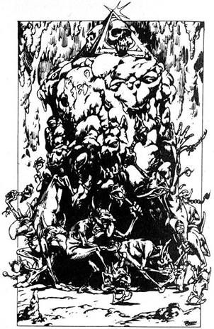
230.
Az alagút kiszélesedik, és magad előtt egy tágas barlangot látsz, amelyből vékony hangok szűrődnek ki. A bejárathoz lopódzol, és benézel. Vagy húsz apró, hosszú orrú, nagy fülű emberke van odabent, és egy vastag aranyszobor körül kört alkotva körbefutnak. Mit teszel:
Bemész és szóba elegyedsz
velük? Lapozz a 88-ra.
Megpróbálsz ellopakodni
mellettük? Lapozz az 5-re.
Iszol a Doppelganger italból (ha van
neked)? Lapozz a 385-re.

231.
A halott Hobgoblinok mögött egy medencét találsz, és amilyen gyorsan csak tudsz, nagyokat kortyolsz a hideg vízből. Ez semlegesíti a savat, és lassan kezded összeszedni magad. Fájdalmaid ellenére felállsz, és elindulsz észak felé. Lapozz a 110-re.
232.
Ha fegyvertelen vagy, lapozz a 286-ra. Ha még megvannak fegyvereid, lapozz a 320-ra.
233.
Letörsz egy nagy darabot a gombából, és vadul a szádba tömöd. Azonnal úgy érzed, hogy a gyomrod puffadni kezd, és látod is, ahogy az öved alatt kidudorodik. Aztán az egész tested nőni kezd, hangos reccsenéssel szakítva szét körötte a ruhát. Egyre nagyobb leszel, és hamarosan arcod a mennyezetnek nyomódik. A gomba után, amit ettél, tűvé teszik a világot a varázslók, óriássá tevő varázsitalukhoz, de számodra ez a vég. Túl nagy vagy, hogy elhagyd a cellát, kalandod itt véget ér.
234.
Kicsit távolabb az alagút földjét vastag, zöld iszap fedi. Fenyegetően néz ki, ezért úgy döntesz, mielőtt belelépnél, egy ruhadarabot lógatsz bele. Az iszap azonnal szétmarja a ruhát, nyoma sem marad. Ha van egy pár gólyaláb nálad, lapozz a 183-ra. Ha nincs, lapozz a 207-re.
235.
Nincs időd elmozdulni, a dárda a combodba fúródik. 2 ÉLETERŐ pontot veszítesz. Ha életben maradsz, lapozz a 73-ra.
236.
Az ököl visszahúzódik, és újra ütni készül. Szabad kezeddel előhúzod kardodat, és megpróbálod levágni az ajtó kilincsét. Bár nem ismered föl, egy Imitátor (Utánzó) támadott meg, elváltoztatott alakban.
Imitátor ÜGYESSÉG 9 ÉLETERŐ 8
Mihelyt megnyerted az első Fordulót, lapozz a 314-re.
237.
Az alagút hirtelen balra fordul, és észak felé vezet, ameddig ellátsz. Hamarosan egy zárt faajtóhoz érsz a bal oldali falon. Ha ki akarod nyitni az ajtót, lapozz a 12-re. Ha inkább továbbmész észak felé, lapozz a 100-ra.
238.
Esés közben megragadod a kötelet. Átlendülsz a túloldalra. Felemeled a sisakot a rúdról, és a fejedre teszed. Kitűnő kovácsmester munkája. 1-gyel növeled vele ÜGYESSÉG pontjaid számát. Nem óhajtod megkockáztatni visszafele is a kötélen a sétát, inkább végigkúszol rajta. Amikor ismét szilárd talaj van a lábad alatt, átmész a boltív alatt, és észak felé tartasz az alagútban. Lapozz a 291-re.

239.
Nem sokkal lejjebb egy zárt ajtót találsz az alagút bal oldalán. Füledet az ajtóhoz szorítva hallgatózol, de semmit sem hallasz. Ha ki akarod nyitni az ajtót, lapozz a 102-re. Ha inkább továbbmész észak felé, lapozz a 344-re.

240.
Lenézel, és látod a két Repülő Őr összezúzott holttestét a földön. Megpróbálod kipiszkálni a bálvány smaragdszemét kardod hegyével. Amikor sikerrel jársz, és kezedbe fogod a követ, meglep a súlya. Reméled, hogy később hasznodra lehet, és a hátizsákodba teszed. Ha most a jobb oldali szemet is ki akarod venni, lapozz a 34-re. Ha inkább lemászol a bálványon, lapozz a 89-re.
241.
Barna bársonyfüggöny zár el egy boltívet az alagút keleti falán. Ha el akarod húzni a függönyt, és átmenni a boltív alatt, lapozz a 393-ra. Ha inkább továbbmész észak felé, lapozz a 291-re.
242.
Megrázod a fejedet, kétségbeesetten próbálsz uralkodni magadon, hogy el ne veszítsd az eszméletedet. De túl nagy a forróság, és öntudatlanul zuhansz a földre. Dobj két kockával. Ha az összeg akkora vagy kisebb, mint ÜGYESSÉGED, lapozz a 48-ra. Ha az összeg nagyobb, lapozz a 366-ra.
243.
Hogy ne lélegezd be a gázt, kezeddel elfeded az orrodat és a szádat, így követed a Gnómot a nyitott ajtón keresztül. Egy újabb alagútba érsz, amelynek végén a napvilág rég várt látványa vár. Legnagyobb meglepetésedre félúton a Gnóm holttestébe botlasz. A halántékából egy nyílvessző áll ki. A Gnóm, miközben szabadulni próbált, beleesett Szukumvit báró utolsó csapdájába. Elmész mellette, ki a ragyogó napsütésbe. Lapozz a 400-ra.
244.
Elveszi az Aranypénzt, és azt mondja, hogy az egyik északi alagútban van egy madárdémon alakú faragott faszék. A szék karfájában van egy rejtett üreg, amelyben egy üvegfiola lapul. - A Doppelganger ital van benne, ha jól emlékszem. Sok szerencsét. Remélem, találkozunk még, nemcsak itt, e pokoli alagutakban. - A férfi elcsoszog, és te tovább folytatod utadat. Lapozz a 109-re.
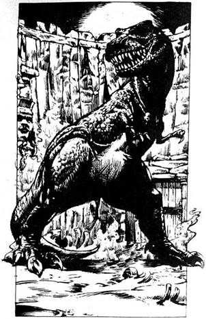
245.
Nincs más választásod, mint kinyitni az ajtót, mint hogy a fal túl sima ahhoz, hogy megmászd. Mély lélegzetet véve lenyomod a kilincset, és egy homokos talajú verembe lépsz. Bent, a szemközti falon levő kétszárnyú ajtó előtt, egy hatalmas, dinoszauruszszerű szörnyeteg áll. Hatalmas, vaskos lába van, és vagy tíz méter magas. Kemény, zöldestarka bőre van, és szájában borotvaéles fogak sorakoznak. Csonttörő erővel csattantja össze állkapcsát, és megremegsz, amint kihúzott karddal felé közeledsz.
Verembestia ÜGYESSÉG 12 ÉLETERŐ 15
Ha győzöl, lapozz a 258-ra.
246.
Bár olyan óvatos vagy, amilyen csak lehetsz, lábad hozzáér az egyik cölöphöz. Azonnal éles szálkák válnak le róla, mindegyik több centiméter hosszú. 2 SZERENCSE pontot veszítesz. A szálkák nagy sebességgel vágódnak ki minden irányba, és téged is eltalálnak. Dobj két kockával, hogy megtudd a bőrödbe fúródó szálkák számát. Minden szálka 1-gyel csökkenti ÉLETERŐDET. Ha életben maradsz, leülsz, és nagy fájdalmak közepette kipiszkálod testedből a szálkákat, mielőtt továbbmennél kelet felé. Lapozz a 313-ra.
247.
Az előtted álló fenevad a rettegett Manticore. Farka végén vastag, kemény tüskék sorakoznak. Hirtelen csap egyet a farkával, és egy tucat tű repül feléd. Dobj egy kockával. Ez adja a testedbe fúródó tüskék számát. 2 ÉLETERŐ pontot veszítesz tüskékként. Ha életben maradsz, előrebotorkálsz, hogy megtámadd a Manticore-t a kardoddal, mielőtt ideje volna újabb adag halálos tüskezáport zúdítani rád.
Manticore ÜGYESSÉG 11 ÉLETERŐ 11
Ha győzöl, lapozz a 364-re.
248.
Az ajtó egy észak felé vezető alagútba nyílik. Becsukod magad mögött az ajtót, és ismét útnak indulsz. Lapozz a 214-re.
249.
Még hallod, amint a Gnóm így szól: - Egy korona és két koponya - majd a fehér villám kicsap a zárból, a melledbe fúródik, és elveszted az eszméletedet. Dobj egy kockával, és adj 1-et a kapott számhoz, majd az összeget vond ki ÉLETERŐDBŐL. Ha életben maradsz, magadhoz térsz, és a Gnóm felszólít, hogy próbáld meg újra. Tudod, hogy egy drágakövet a megfelelő helyre tettél, de azt nem, hogy melyiket. Felsóhajtasz, és habozva új kombinációval próbálkozol.
A B C
Smaragd Gyémánt Zafír Lapozz a 16-ra.
Gyémánt Zafír Smaragd Lapozz a 392-re.
Zafír Smaragd Gyémánt Lapozz a 177-re.
Smaragd Zafír Gyémánt Lapozz a 287-re.
Gyémánt Smaragd Zafír Lapozz a 132-re.
Zafír Gyémánt Smaragd Lapozz a 249-re.
250.
Az ajtó felé futsz, de az öreg utánad kiált: Kár futnod, senki sem menekülhet előlem. Állj meg, vagy azonnal kővé változtatlak. - Mit teszel:
Továbbfutsz? Lapozz a 44-re.
Kardoddal rátámadsz? Lapozz a 195-re.
Azt mondod, hogy válaszolsz
kérdéseire? Lapozz a 382-re.
251.
A rejtélyes hang ismét megszólal, ez alkalommal legnagyobb meglepetésedre jóval kevésbé fenyegetően. - Helyes, gazdám szereti azokat, akik nem hajbókolnak. Fogadd el az ajándékát. Egy kívánságodat teljesíti, de csak egyet. Jó utat, - Mintegy varázsütésre egy aranygyűrű bukkan elő a semmiből, és finom csilingeléssel a lábadhoz hull. Fölveszed, és az ujjadra húzod. Az ajtó kinyílik, és visszatérsz az északra vezető alagútba. Lapozz a 344-re.
252.
Az alagút jó ideig észak felé tart, majd zsákutcába torkollik. A nyugati falán egy csúszda szája áll ki, s úgy tűnik, ha nem akarsz visszafordulni, ez az egyetlen választásod. Úgy határozol, hogy megkockáztatod, és bemászol a csúszdába. Lágyan siklasz lefelé, és egy szobába zuhansz. Lapozz a 90-re.
253.
Kiveszed a hátizsákodból a csontot, és lehajítod a lépcsőn. Az ugatás hangosabb lesz, majd morgássá és vicsorgássá változik, amikor a csont talajt ér. Karddal a kézben lassan lemész a lépcsőn, és két jól megtermett fekete Őrzőkutyát látsz, amint a csonton verekszik. Gyorsan elmész mellettük, és lefordulsz az alagútban. Lapozz a 315-re.

254.
Kivont karddal, lassan közeledsz a hatalmas, nyálkás Sziklahernyó felé.
Sziklahernyó ÜGYESSÉG 7 ÉLETERŐ 11
Ha győzöl, lapozz a 76-ra. Két Forduló után Elmenekülhetsz nyugatnak futva az alagútban. Lapozz a 117-re.
255.
Miközben körbefutsz a keskeny ösvényen, hirtelen megszédülsz. A medencéből jövő gáz megteszi hatását, látásod elhomályosul, és elveszíted egyensúlyodat. Alig vagy tudatában, hogy a Vérvad nyelve köréd tekeredik, és lehúz az iszapba. Miután az undorító iszap elemészt, a szörnyű Vérvad kedvére elfogyaszt.
256.
Eszedbe jut az öreg tanácsa, és átvizsgálod a karfát a titkos üvegért. Egy szemmel alig látható repedést találsz a karon, amit megnyomsz, majd megcsavarsz. Hirtelen egy apró ajtó pattan föl, és meglátsz egy mélyedésben fekvő üvegfiolát. Kiveszed, és elolvasod a címkét: „Doppelganger ital - csak egy adag. Ez az ital lehetővé teszi, hogy bármelyik közelben lévő élőlény alakját felvedd.” Hátizsákodba teszed a különös italt, és továbbmész észak felé. Lapozz a 188-ra.
257.
Az egyik Ork zsebében egy aranyrögöt és egy facsövet találsz. A hátizsákodba teszed szerzeményeidet, és elindulsz nyugatnak. Lapozz a 164-re.
258.
Kimerülten leülsz a halott bestia farkára, és pihensz egy kicsit. Amikor lenézel a földre, hirtelen egy vaskarikát pillantasz meg, amely kiáll a homokból. Ha meg akarod húzni a karikát, lapozz a 95-re. Ha inkább távozol a veremből a szárnyas-ajtón keresztül, lapozz a 248-ra.
259.
Ügyet sem vetve a fájdalomra továbbrohansz. Egy föld alatti folyót látsz magad előtt, amely keletről nyugatra folyik keresztül a barlangon, és egy fahíd keresztezi. Hátrafordulsz, és látod, hogy a Troglodyták szorosan a nyomodban vannak. Ha fel akarsz futni a hídra, lapozz a 318-ra, ha inkább a folyóba veted magad, lapozz a 47-re.
260.
Épphogy sikerül megragadnod a bálvány fülcimpáját és támasztékot keresni a lábadnak. Átmászol az arca fölött, és leülsz az orrára. Előhúzod kardodat, és azon gondolkodsz, melyik drágakőszemét piszkáld ki előbb. Ha a balt, lapozz a 166-ra. Ha a jobbat, lapozz a 140-re.
261.
Hiába próbálod, nem tudod a lasszót lerántani a bálvány nyakáról. Végül feladod, és otthagyod annak, aki utánad jön, akárki legyen is az. Nincs más a barlangban, ami érdekelne, ezért az északi falához mész, és belépsz az alagútba. Lapozz a 239-re.

262.
Az ajtó egy újabb alagútba nyílik, amely észak felé vezet. Két kerub alakú faragott kőkutat látsz magad előtt az alagút két oldalán. A kerubok szájából vízsugár folyik az előttük levő kis tálba. Mit teszel:
Iszol a bal oldali kút vizéből? Lapozz a 337-re.
Iszol a jobb oldali kút vizéből? Lapozz a 173-ra.
Továbbmész északnak? Lapozz a 368-ra.
263.
Az ajtó egy újabb alagútra nyílik. Ezen nyugat felé mész, és hamarosan ismét egy ajtóhoz érsz az alagút északi falán. Ha kinyitnád az ajtót, lapozz a 153-ra. Ha inkább folytatnád utadat nyugat felé, lapozz a 74-re.
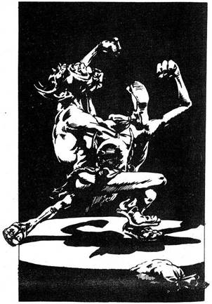
264.
A félhomályban két Hobgoblint látsz magad előtt, amint egymást vadul ütve, rúgva verekednek. Egy bőrtáska hever a padlón, és láthatóan ezért estek egymásnak Mit teszel:
Megpróbálsz beszélni velük? Lapozz a 130-ra.
Kardoddal rájuk támadsz? Lapozz az 51-re.
Megpróbálsz észrevétlenül elosonni
mellettük? Lapozz a 355-re.
265.
Megdörzsölöd varázsgyűrűdet, és azt kívánod, bárcsak kerülne vissza a Tükör Démon saját világába, és soha ne térjen vissza. Az, még miközben mindig feléd közeledik, megremeg és elhalványul. Majd teljesen eltűnik, és folytathatod vándorlásod észak felé. Lapozz a 122-re.
266.
Átkutatod az Ivy szobájában levő szekrényeket és dobozokat, de semmit nem találsz, kivéve egy öreg csontot, amit magaddal viszel, ha kedved tartja. A keleti ajtón keresztül távozol a kamrából, és most egy újabb alagút kiindulópontjánál találod magad. Lapozz a 305-re.
267.
Az alagút egy elágazásnál hamarosan véget ér. Jobbra, majd balra nézve egy keskeny átjárót látsz messze a félhomályban. Ha nyugat felé indulsz, lapozz a 352-re. Ha kelet felé indulsz, lapozz a 68-ra.
268.
Előreveted magad, és megpróbálod megragadni vezetőjüket, hogy túszul ejtsd. Ám a Troglodytákat nem éri váratlanul a dolog, és hat íjászuk azonnal kilövi rád nyilát. Halálos pontossággal céloznak, és mind a hat nyíl eltalál. Élettelenül zuhansz a földre. A Troglodyták hirtelen véget vetettek utadnak.
269.
A köcsög tartalmát a kezedre üríted, és bekened vele sebeidet. Azonnal kifejti gyógyító hatását, és rögtön erősebbnek érzed magad. 3 ÉLETERŐ pontot nyertél. Ha eddig nem tetted meg, megeheted a rizst és megihatod a vizet - lapozz a 330-ra -’ vagy távozol a teremből, s csak a gyémántot viszed magaddal - lapozz a 127-re.
270.
A doboz teteje könnyedén nyílik. Benne két aranypénzt találsz, és egy üzenetet, amely egy kis pergamenen neked szól. Előbb zsebre vágod az aranyakat, aztán elolvasod az üzenetet: - „Jól tetted. Legalább volt annyi eszed, hogy megállj és elfogadd az ajándékot. Most azt tanácsolom neked, hogy keress és használj különféle tárgyakat, ha sikerrel akarsz áthaladni Halállabirintusomon.” Az aláírás Szukumvit. Megjegyzed a tanácsot, apró darabokra téped a pergament, és továbbmész észak felé. Lapozz a 66-ra.

271.
Épp arra készülsz, hogy áthajítsd a pajzsodat a gödör fölött, amikor az kicsúszik ujjaid közül, és elgurul. Hiába kapsz utána, beleesik a gödörbe, és nagy csörögve annak fenekén landol. Pajzsod elvesztése csökkenti harci erődet 1 ÜGYESSÉG pontot vesztesz. Szidod saját ügyetlenségedet, előrelépsz, átugrasz a verem fölött, és biztonságosan talajt érsz a másik oldalon. Nem veszítesz több időt, mész keletnek. Lapozz a 237-re.

272.
Bár a Vérvad túlságosan súlyos és nehézkes ahhoz, hogy kimásszon a medencéből, kinyújtja hosszú nyelvét, és a lábad köré tekeri. Öntudatlan vagy, amikor behúz magához a medencébe. Miután a gonosz iszap feldolgoz, a szörnyű Vérvad kedvére elfogyaszt.
273.
A fagolyó nekivágódik a koponyának, és leveri az oszlopról a földre. Legnagyobb meglepetésedre az íjak nem lövik ki halálos vesszőiket. Elővigyázatosan belépsz a szobába, és felveszed a koponyát a földről. Felismered, hogy a sárga szemek topázból vannak, és gyorsan kiveszed őket. Berakod a zsákodba, és azon morfondírozol, hogy vár-e rád csapda még a szobában. Mit teszel?
Négykézlábra ereszkedsz, és kikúszol a szobából,
magaddal víve a koponyát? Lapozz a 15-re.
Visszateszed a koponyát az oszlopra, mielőtt
távoznál a szobából? Lapozz a 204-re.
274.
Idegesen lépsz a kötélre, nem is mersz lenézni. Félúton lehetsz, amikor pánikba esel, és elveszted egyensúlyodat. Dobj két kockával. Ha az összeg akkora vagy kevesebb, mint ÜGYESSÉGED, lapozz a 238-ra. Ha az összeg magasabb, mint ÜGYESSÉGED, lapozz a 359-re.

275.
Sűrű füst száll fel a földről, ahová a sav folyt a törött kancsóból. Kétségbeesetten kúszol a földön, és iható vizet keresel a nyirkos alagút sekély pocsolyáiban. Tedd próbára SZERENCSÉD. Ha szerencséd van, lapozz a 231-re. Ha nincs szerencséd, lapozz a 309-re.
276.
Megpróbálod válladdal betörni az ajtót, de meghallod a közeledő Troglodyták rikácsoló hangját. Csapdában vagy. Előhúzod kardodat, de a Troglodyták körülvesznek, megfeszítik íjukat és nyílzápor zúg feléd, mely végez veled. Élettelen tested a Halállabirintus mélyének földjére hull.
277.
Az alagút élesen jobbra fordul, majd száz méter megtétele után egy kereszteződéshez érsz. Balra nézve két testet pillantasz meg a földön. Úgy döntesz, hogy utánajársz. Lapozz a 338-ra.
278.
Pengéd belevájódik a Vérvad egyik valódi szemébe. A vad rángatózva hull vissza a medencébe. Megragadod a lehetőséget, gyorsan megkerülve a medencét a kijárathoz mész. Lapozz a 134-re.
279.
Elágazáshoz érsz. Egy új ág nyugatnak vezet, de a nedves lábnyomok, amelyeket követtél, továbbra is észak felé haladnak. Úgy döntesz, hogy továbbra is a lábnyomokat löveted. Lapozz a 32-re.
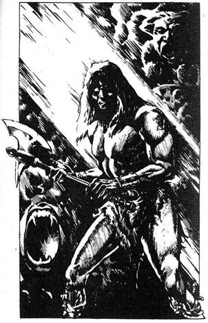
280.
Az alagút hosszú ideig kelet felé tart, mielőtt elágazáshoz érnél. A dél felé vezető ágon a falakat, a földet és a mennyezetet egyaránt sűrű, zöld iszap borítja. Úgy véled, biztonságosabb, ha észak felé mész. Lapozz a 218-ra.
281.
Hű kardod egyetlen csapásával lefejezed a Boa Constrictort. Leemeled súlyos testét a Lányról, akit meg próbálsz magához téríteni. Szemét kissé kinyitja, de látod, hogy nincs remény. Rád mosolyog, aztán suttogva így szól: - Köszönöm. Tudom, hogy számomra már késő, de elmondom, mit tudtam meg. Jó úton haladsz, de drágakövekre van szükséged, hogy meg nyisd az utolsó kaput. Egyikük gyémánt, de nem tudom, mi a többi, n sajnos nem találtam gyémántot, de arra kérlek, te keress. Sok szerencsét. - Szeme lecsukódik, és a lány teste a hideg földre hull. Szomorúan nézed, ahogy az utolsókat lélegzi. Tudod, hogy nem bánná, ezért elveszed két tőrét, és átkutatod bőr hátizsákját. Némi kovásztalan kenyeret, egy tükröt és egy majom formájú csontkabalát találsz benne. Ha megeszed a kenyeret, lapozz a 399-re. Ha inkább magadhoz veszed a tükröt és a kabalát és visszatérsz az észak felé vezető alagútba, lapozz a 192-re.
282.
Az alagút hamarosan véget ér egy elágazásnál. Gondolkodva, merre is menjen, ott áll egyedül egyik vetélytársad. Az egyik Barbár az. Szólsz hozzá, de először nem válaszol, csak hidegen mered rád, és keményen megmarkolja csatabárdját. Odamész hozzá, és megkérdezed, merre indul.
Válaszul mordul egyet, és közli, hogy nyugatnak megy, és ha akarsz, vele tart hatsz. Ha van kedved nyugatnak indulni a Barbárral, lapozz a 22-re. Ha visszautasítod ajánlatát és egyedül mész tovább keletre, lapozz a 388-ra.
283.
Egészen mélyen be kell gyömöszölnöd magad a hasadékba, hogy teljesen elrejtőzz. Ebben a kitekert testhelyzetben nem látod az elcsoszogó lábak tulajdonosát. Egy perc múlva újra minden csendes, kimászol az alagútba, és nyugatnak mész. Lapozz a 109-re.
284.
Ittál a fekete bőrkötésű könyvben levő folyadékból? Ha igen, lapozz a 398-ra Ha nem, lapozz az 57-re.
285.
A hátadra puffansz, de szerencsére hátizsákod felfogja némileg az ütést: 1 ÜGYESSÉG és 2 ÉLETERŐ pontot veszítesz. Csaknem teljesen sötét van a verem fenekén, és magad előtt tapogatózva kúszol a földön. Hirtelen valami hideg, kemény, sima felületet tapintasz. A tárgy kicsi és kerek, de nem jössz rá, mi az. A hátizsákodba teszed, gondolod, majd megnézed, ha kimásztál a veremből. Továbbkúszol, és végül eléred a verem falát. Túl sima ahhoz, hogy fölmásszál rajta, ezért kardoddal kell kezednek és lábujjaidnak kapaszkodóhelyet vájni. Soká tart, de végül kiérsz a verem keleti oldalán. Azonnal megnézed a hátizsákodban levő tárgyat. Egy vérvörös rubingömb az. Elégedetten, jókedvűen indulsz útnak kelet felé, halkan fütyörészel. Lapozz a 237-re.
286.
Most már látod, hogy hiba volt korábban letenni a fegyvereidet, de legalább most elveheted a halott Nindzsáét. Egyik hosszú kését és hosszú, görbe kardját választod. Szörnyen éles, és csak csodálni tudod félelmetes szépségét. Adj 4-et ÜGYESSÉG pontjaidhoz, és lapozz a 320-ra.
287.
Hallod, amint a Gnóm így szól: - Egy korona és két koponya s rögtön utána fehér villám lövell ki a zárból a melledre, és elveszíted az eszméletedet. Dobj egy kockával, adj 1-et a számhoz, és vond ki az összeget ÉLETERŐ pontjaidból. Ha életben maradsz, magadhoz térsz, és a Gnóm felszólít, hogy próbáld meg újra. Tudod, hogy egy drágakövet a megfelelő résbe tettél. De melyiket? Felsóhajtasz, és egy új kombinációval próbálkozol.
A B C
Smaragd Gyémánt Zafír Lapozz a 16-ra.
Gyémánt Zafír Smaragd Lapozz a 392-re.
Zafír Smaragd Gyémánt Lapozz a 177-re.
Smaragd Zafír Gyémánt Lapozz a 287-re.
Gyémánt Smaragd Zafír Lapozz a 132-re.
Zafír Gyémánt Smaragd Lapozz a 249-re.

288.
Balra nézel, és meglátod Thromot, amint a levágott Barlangi Troll (Óriás) fölött áll. Ömlik a vér a vállán levő mély vágásból, de ez láthatóan nem aggasztja. Átkutatod a Barlangi Troll holttestét, de semmit sem találsz, kivéve egy bőrzsinóron függő csontgyűrűt egyikük nyakában. A gyűrűbe egy jelet véstek, amelyet Throm felismer. Elmondja, hogy az északi druidáké lehetett a gyűrű, és egy ilyen régi talizmán megnöveli erődet, ha tested képes befogadni. Throm nem meri megérinteni, és azt tanácsolja, hogy te is hagyd, ahol van. Ha fel akarod venni a gyűrűt, lapozz a 64-re. Ha inkább továbbmész Thrommal kelet felé, lapozz a 221-re.
289.
A függöny felemelkedik, és rémülten látod, hogy egy koros nő néz veled szembe, akinek a haja tekergő kígyókból áll. A rettenetes Medúza az. Tedd próbára SZERENCSÉD. Ha szerencséd van, lapozz a 216-ra. Ha nincs szerencséd, lapozz a 19-re.
290.
Dobj két kockával. Ha az összeg nyolc, lapozz a 152-re. Ha az összeg bármi más, mint nyolc, lapozz a 121-re.
291.
Az alagút jó ideig észak felé vezet, mielőtt végül élesen jobbra fordulna. A sarok után zsákutcához ér. Csak egy fából készült csúszdán tudsz továbbhaladni. Úgy döntesz, hogy vállalod a kockázatot, és bemászol a csúszdába. Lassan csúszol lefelé, s a hátadra esve egy szobába érkezel. Lapozz a 90-re.

292.
Egy ajtót látsz meg az alagút bal oldali falán. Hosszan hallgatózol, de semmit sem hallasz. Az ajtó nincs kulcsra zárva, és a kilincs könnyen mozdul. Ha ki akarod nyitni az ajtót, lapozz a 93-ra. Ha inkább továbbmész az alagútban, lapozz a 230-ra.
293.
A három pár nedves lábnyomot követve az alagút nyugati elágazásában hamarosan egy újabb elágazáshoz érsz. Ha továbbmész nyugat felé a lábnyomokat követve, lapozz a 137-re. Ha inkább észak felé mész a harmadik pár lábnyom után, lapozz a 387-re.

294.
Szabad kezeddel előrántod övedből a tőrt, és a Vérvad nyelvére vágsz. A vad felüvölt fájdalmában, és amennyire csak tudja, előreveti magát, hogy véráztatta ajkai közé kapjon. A földről kell küzdened vele tőröddel. ÜGYESSÉGED 2-vel csökkent ebben a harcban, minthogy nem a kardoddal harcolsz.
Vérvad ÜGYESSÉG 12 ÉLETERŐ 10
Mihelyt megnyerted az első Fordulót, Tedd próbára SZERENCSÉD. Ha szerencséd van, lapozz a 97-re. Ha nincs szerencséd, lapozz a 21-re.
295.
A boltíves átjáró felé rohanva megbotlasz egy sziklában, és elterülsz a földön. Mielőtt felkelhetnél, egy cseppkő pont rád esik, hegyes vége átszúrja a lábadat. 5 ÉLETERŐ pontot veszítesz. Ha életben maradsz, lapozz a 206-ra.

296.
Látod, hogy az alagút éles kanyart vesz, s onnan tovább észak felé vezet. Megállsz a kanyarban, ahol megijesztenek a suttogó, vihogó, éles hangok. Ha elő húzod a kardodat, és belesel a kanyaron túlra, lapozz a 49-re. Ha inkább visszamész a kereszteződéshez, és észak felé haladsz, lapozz a 241-re.
297.
Gondot okoz, hogy elvesztetted nehezen megszerzett tulajdonaidat. 1 SZERENCSE pontot veszítesz. Ivy anélkül, hogy megállna köszönetet mondani, kituszkol a keleti falon levő ajtón, és egy újabb alagút kiindulópontján találod magad. Lapozz a 305-re.
298.
Egy hátizsákot látsz az alagút falának támasztva. Kíváncsi vagy, vajon vetélytársaid egyikéé-e. Ha bele akarsz nézni, lapozz a 304-re. Ha inkább továbbmész észak felé, lapozz a 279-re.
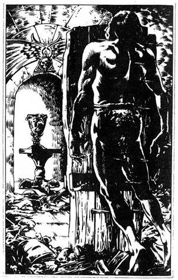
299.
Az ajtó egy tágas kamrába nyílik, ahol döbbenten látod egyik vetélytársadat, aki láthatóan véres halált halt. Az egyik Barbár az, és több hosszú vasszög szúrta keresztül. A szögek a padló egy darabjából állnak ki, amely felcsapódott. A földön egy csomó szemét és limlom álcázza a rejtett zsinórt, amelyre a Barbár ráléphetett, és így kipattintotta a szöges padlódarabot. A túloldali sarokban egy fülkében ezüstserleg áll egy kis faasztalon. Mit teszel:
Átkutatod a Barbárt? Lapozz a 126-ra.
A fülkébe mész? Lapozz a 41-re.
Becsukod az ajtót, és továbbmész
kelet felé? Lapozz a 83-ra.
300.
Teljes erőddel a tükörre csapsz a kardoddal, de eredménytelenül. A tükör nem törik össze, és a Tükör Démon egyre közeledik. Ha megpróbálsz újra a tükörre csapni, lapozz a 141-re. Ha inkább a Tükör Démont támadod meg, lapozz a 327-re.
301.
A csatorna nedves és csúszós, de csúszkálva tovább mászol a párás sötétben. Hirtelen valami kemény, négyszögletes tárgyat érintesz. Úgy érzed, fából van. Ahogy megrázod, zörög, úgy véled, hogy doboz. Ha visszamászol a csatornában, hogy megvizsgáld, mit találtál, lapozz a 162-re. Ha inkább továbbnyomulsz a csatornában, magaddal víve a dobozt, hogy majd később megnézd, lapozz a 4-re.
302.
Úgy húsz perc elteltével a Törpe újra feltűnik az erkélyen. Lekiált neked: - Nos, egy érdekes feladattal szolgálhatok. Készülj, hogy megvívj következő ellenfeleddel. A faajtó újra felemelkedik, és döbbenten pillantasz meg egy ismerős arcot. Throm az. Megsebesült, alig áll a lábán, láthatóan nem ismer meg. Nincs eszénél, ahogy előretántorog és csatabárdját felemelve támadni akar. A Törpe felnevet. A kobra megmarta, de olyan erős, mint egy bivaly, és életben maradt, bár a legtöbb ember belehalt volna. Most vele kell megküzdened, hogy eldöntsük, ki folytatja a Bajnokok Próbáját. - Átkokat szórsz a Törpére, tiltakozol a dolog kegyetlensége ellen. Ő csak nevet, és nincs más választásod, mint védekezni szegény Throm ellen.
Throm ÜGYESSÉG 10 ÉLETERŐ 12
Throm sebei ellenére hihetetlenül erős. Ha győzöl, lapozz a 379-re.


303.
Szabad kezeddel a hátizsákodba nyúlsz, és kiveszed a kancsót. Fogaddal kihúzod a dugót, a savat az ajtóra öntöd, ami nem más, mint egy Imitátor, aki ezt az alakot vette fel. Füstfelhő száll fel, ahogy a sav hangos sziszegéssel szétégeti az Imitátort. Az porrá válik, és sértetlenül mehetsz tovább. Mivel nincs más választásod, némi aggodalommal a másik ajtó kilincsét nyomod le. Lapozz a 262-re.

304.
Mindössze egy Aranyérme fekszik a hátizsák mélyén. Ahogy érte nyúlsz, valami hirtelen enyhén csiklandozni kezdi a kézfejedet. Lassan visszahúzod a kezedet, s megpróbálsz uralkodni növekvő pánikodon. Rémülten látod, hogy egy pók, a Fekete Özvegy mászott a kezedre. Mielőtt lerázhatnád, mérgével mélyen belemar a csuklódba. 6 ÉLETERŐ pontot veszítesz. Ha életben maradsz, lapozz a 20-ra.
305.
Az alagút egy lefelé vezető kő lépcsősornál ér véget. Az alattad levő szintről hangos kutyaugatást hallasz. Van egy darab régi csont nálad? Ha igen, lapozz a 253-ra. Ha nincs, lapozz a 148-ra.
306.
Mielőtt egy lépést is tehetnél a Leprechaunok felé, egyikük valami csillogó port szór rád. Azonnal megdermedsz, egy izmodat sem tudod mozdítani. Tehetetlenül nézed végig, hogy a Leprechaunok feltúrják hátizsákodat és elviszik mindenedet, csak az üres zsák marad meg. 2 SZERENCSE pontot veszítesz. Úgy egy óra elteltével a por dermesztő hatása kezd elmúlni, és tagjaidat újra tudod mozdítani. Haragszol a veszteség miatt, és északnak törtetsz, elszántan, hogy megtorlod a dolgot. Lapozz a 29-re.

307.
A szekrényben egy fakalapács és tíz vasszög van, amelyeket a hátizsákodba teszel, miközben azon morfondírozol, melyik ajtót nyisd ki. Ha a nyugatit választod, lapozz a 263-ra. Ha az északit, lapozz a 136-ra.
308.
A Medúza sikoltozik, amikor a ketrecébe lépsz, és a szemedet szorosan csukva tartva, kardoddal vadul csapkodsz jobbra-balra. Érzed, hogy a penge mélyen belevág, és hallod, amint tompa puffanással összeesik. Kinyitod a szemedet, és megborzadsz a Medúza leterített alakjától. Köpenyét egy széles melltű fogja össze, amelyben egy fényes, vörös kő van. Egy gránát az. Kiveszed a foglalatából, és észak felé elhagyod a szobát. Lapozz a 316-ra.
309.
Kétségbeesetten mászkálsz fel-alá vizet keresve, de nem találsz. A sav fájdalmas sebet éget a torkodban. 3 ÉLETERŐ pontot veszítesz. Ha életben maradsz, Tedd próbára SZERENCSÉD. Ha szerencséd van, lapozz a 231-re. Ha nincs szerencséd, lapozz a 193-ra.
310.
Eléred a kamra túloldali falát, és két ajtót látsz. Ha a bal oldalit akarod kinyitni, lapozz a 339-re. Ha a jobb oldalit akarod kinyitni, lapozz a 262-re.
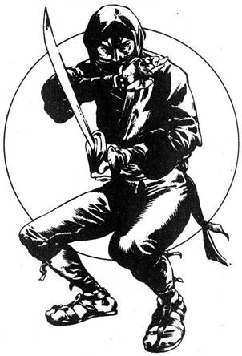
311.
A Barbár vonakodva beleegyezik a javaslatodba. Mindketten hátraléptek, és nekifutva átugorjátok a gödröt. Biztonsággal talajt értek a túloldalon, és továbbmentek az alagútban. A Barbár, aki elöl halad, hirtelen megbotlik egy kiálló kőben, amely előrebillen, és kimozdít egy kilazult követ a mennyezetből. A kő a fejére esik, és összetöri a koponyáját. Egyedül kell folytatnod utadat. Lapozz a 325-re.
312.
A borotvaéles korong elzúg a fejed mellett, és mélyen belefúródik az egyik oszlopba. Szembefordulsz az életedre törő ellenséggel, aki hosszú kardját kivonva közeledik.
Nindzsa ÜGYESSÉG 11 ÉLETERŐ 9
Ha győzöl, lapozz a 232-re.
313.
Az alagút egy elágazásba torkollik. A nyomok, amelyeket követtél, észak felé haladnak tovább, és úgy határozol, hogy te is arra tartasz. Lapozz a 32-re.
314.
Kardod kettészeli a kilincset, és az leválva az ajtótól, a földre hullik. Nincs más választásod, némiképp habozva a másik ajtó kilincséhez nyúlsz. Lapozz a 262-re.
315.
Az alagút élesen balra kanyarodik, és egy magas falba torkollik, amelyen egy ajtó van. Félelmetes üvöltést hallasz a fal túlsó oldaláról, és elálmélkodsz. Vajon milyen hatalmas szörnyeteg adhat ki ilyen zajt. Ha van egy tekercs kötél és egy csáklya nálad, lapozz a 129-re. Ha nincs, lapozz a 245-re.
316.
Az alagút jó ideig folytatódik, mielőtt újabb elágazáshoz érnél. Ha nyugat felé akarsz menni az új alagútban, lapozz a 296-ra. Ha inkább továbbmész észak felé, lapozz a 241-re.
317.
Kardoddal kitapintva a vágat oldalát, vakon botorkálsz előre a csúszós iszapban. Mintha időtlen idők óta követnéd kanyarait és hajlatait, és kíváncsi vagy, hová vezet. Hirtelen meghallod, hogy valami csúszik előtted. Megdermedsz a félelemtől, kétségbeesetten meresztgeted a szemedet a koromfekete sötétségben. Mielőtt felfoghatnád, mi is történik, egy újabb Sziklahernyó állkapcsa ragadja meg a nyakadat. Annak a Sziklahernyónak a társa ez, amellyel végeztél, és a kardodon levő vér szaga vonzotta. Egyre keményebben szorít, míg végül nyaki csigolyád úgy pattan el, mint egy vékony gally. Kalandod itt véget ér.

318.
Miután átfutsz a hídon, keresztülrohansz a barlangon is. Végül a távoli falon egy alagút bejáratát pillantod meg. Odaszaladsz, de súlyos faajtó zárja el, mely kulcsra van zárva. Ha van vaskulcsod, lapozz a 86-ra. Ha nincs, lapozz a 276-ra.
319.
Páncélod és kardod súlyosabb, mint gondoltad. Félúton vagy a levegőben, amikor rémülten rájössz, hogy nem fogod elérni a túloldalt. A verem falának csapódsz vagy két méterrel a perem alatt, és fejjel lefelé belezuhansz a gödörbe. Lapozz a 285-re.
320.
Átkutatod a Nindzsát, és ruhája ráncaiban egy vászonzsákot találsz. Abban egy kulacs víz, némi pálmalevélbe tekert rizs, egy tubus kenőcs és egy gyönyörű gyémánt van. Mit teszel:
Megeszed a rizst, és megiszod a
vizet? Lapozz a 330-ra.
A kenőcsöt sebeidre kened? Lapozz a 269-re.
Csak a gyémántot veszed el, és távozol a
teremből? Lapozz a 127-re.
321.
Meghúzod a zsinórt, és nézed a függönyt, amint felemelkedik a vasketrecről. A nő hangja sürget, hogy igyekezzél, mert a szoba csapda, pluszsúlyod miatt a padló egy percen belül leszakad. Ha mégis segíteni akarsz neki, lapozz a 289-re. Ha inkább távozol a szobából és továbbmész észak felé az alagútban, lapozz a 316-ra.

322.
Elmész a faszék mellett, és hamarosan visszaérsz az elágazáshoz, ahol jobbra fordulva nyugatnak tartasz. Lapozz a 43-ra.
323.
Miután a kötelet a szikla köré tekered, lassan leereszkedsz a verem aljára. Throm lehúzza a kötelet a szikláról, és mindketten elindultok az új alagútban. Lapozz a 194-re.
324.
Beszéltél a Próbamester megcsonkított szolgájával? Ha igen, lapozz a 256-ra. Ha nem, lapozz a 79-re.

325.
Felállsz, és folytatod utadat. Hirtelen napfényt pillantasz meg az alagút végében. Futni kezdesz a legszebb látvány felé, amelyet oly rég nem láttál, a tiszta kék ég és a zöld fák felé. Olyan gyorsan rohansz, ahogyan csak tudsz az alagút vége felé, s ott kirontasz, várva az éljenző, üdvözlő tömeget. De nincs hősöknek kijáró üdvözlet a körötted álló emberektől. Mind halottak. Állig felfegyverzett csontvázakkal és holttestekkel teli hideg kamrában vagy. A kijárat csak illúzió volt. Csak az elmúlt kalandok holttestei valódiak. Lehangoltan baktatsz vissza az alagútba, de láthatatlan falnak ütközöl. Csapdába kerültél, és az a sors vár rád, hogy a halottak kamrájában töltsd hátralevő napjaidat.
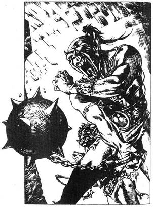
326.
Előtted az alagút élesen jobbra fordul. Befordulsz a sarkon, és szinte beleütközöl két vad tekintetű Gladiátorba, akik láncos buzogányokkal vannak felfegyverkezve, és bőrpáncélt viselnek. Teljesen váratlanul ér, és ahogy előrántod kardodat, egyikük feléd lendíti láncos buzogányát. Dobj egy kockával. Ha 1-et vagy 2-t dobtál, lapozz a 91-re. Ha 3-at vagy 4-et, lapozz a 189-re. Ha 5-öt vagy 6-ot, lapozz a 380-ra.
327.
A Tükör Démon nem is védi magát, csak az érdekli, hogy megragadja a karodat.
Tükör Démon ÜGYESSÉG 10 ÉLETERŐ 10
Ha a Tükör Démon TÁMADÓEREJE akármelyik Fordulóban nagyobb, mint a tied, lapozz a 8-ra. Ha sikerül úgy legyőznöd a Tükör Démont, hogy egyetlen Fordulót sem veszítesz, lapozz a 92-re.
328.
Körülnézel Ivy szobájában. Egy másik Troll képét látod a falon, és megkérded Ivyt, nem rokona-e? Lazít a szorításon, és mosolyogva válaszol. - Igen. Ő az én drága bátyám. Savanyúhas. Sokra vitte lenn délen, a Feketehomok-kikötőben. A császári gárdában van. Lord Azzur elitcsapatában. Nagyon büszke vagyok rá. Ivy a képen merengve tovább dicséri bátyját. Ha ki akarsz osonni a kamrából a keleti falban levő ajtón keresztül, lapozz a 125-re. Ha inkább folytatod a beszélgetést, lapozz a 99-re.
329.
A tükörhöz lépsz, és gyönyörködsz torzképedben. A fejed akkora, mint egy sütőtök, és az arcod is teljesen idegen. Hirtelen, nem tudni, mitől, szörnyű fájdalom hasít a fejedbe, és nem tudod levenni szemedet a tükörről, bármennyire is próbálod. Valami ördögi erő saját tükörképedre szegezi tekintetedet. Kezeddel megragadod a fejedet, és rémülten észleled, hogy nő. Nem tudsz ellenállni, a fájdalom erősödik, öntudatlanul zuhansz a földre, és többé nem ébredsz fel.
330.
A Nindzsa élelmiszere nem túl tápláló, de jól jön. Nyersz 1 ÉLETERŐ pontot. Ha eddig nem tetted, kenhetsz sebedre a kenőcsből - lapozz a 269-re, vagy a gyémántot magadhoz véve távozol a teremből - lapozz a 127-re.
331.
Az, hogy a pergamenhez nyúlsz, pontosan azt eredményezi, amitől tartottál. A csontváz előretántorog, és görcsösen felemeli kardját, hogy lecsapjon rád. Oldalt lépve kardot rántasz, hogy védd magad.
Csontváz Harcos ÜGYESSÉG 8 ÉLETERŐ 6
Ha győzöl, lapozz a 71-re.
332.
A drágakő tompa csobbanással hull a medencébe. Ahogy várod, hogy valami történjen, kezded érezni, hogy elhagy az erőd. A medencéből feltörő gáz mérgező, és öntudatlanul a földre hullsz. Tedd próbára SZERENCSÉD. Ha szerencséd van, lapozz az 53-ra. Ha nincs szerencséd, lapozz a 272-re.
333.
Lépéseket hallasz, és a csapóajtó hirtelen felvágódik. Néhány másodpercre teljesen elvakít a fölötted levő szobából áradó fény, és nem látod a Goblint, aki lefelé döf lándzsájával, és nem hallod szadista nevetését, ahogy a lándzsa a nyakadba szúródik. Kalandod itt ér véget, az alagút kőlépcsőin.
334.
Puszta kezeddel próbálod letépni a nyelvet a lábadról, de nem sikerül. Lassan behúz az iszapba, ahol feldolgoz és végül elfogyaszt a szörnyű Vérvad.
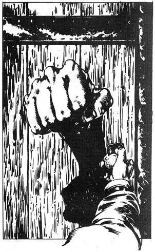
335.
Teljes sebességgel futva beleugrasz a folyóba. Tedd próbára SZERENCSÉD. Ha szerencséd van, lapozz a 67-re. Ha nincs szerencséd, lapozz a 101-re.
336.
A csuklóvédőt egy boszorkány készítette - és átkozta meg. Lelassítja reakcióidat, és tompítja érzékeidet. 4 ponttal csökkenti ÜGYESSÉGED. Dühödten az alagút falába rúgsz, északnak csörtetsz. Lapozz a 298-ra.
337.
A hideg víz felfrissít, de a forrást elátkozta egy boszorkány. 1 ÉLETERŐ pontot nyersz, 2 SZERENCSE pontot veszítesz. Ha eddig nem tetted meg, ihatsz a másik kútból - lápozz a 173-ra, vagy továbbmész észak felé - lapozz a 68-ra.
338.
A két holttest két Ork őr teteme. Legalább egy vetélytársad előtted kell hogy járjon. Gyorsan átkutatod a holttesteket, de Semmit nem találsz, kivéve egy fogakból készült nyakláncot egyikük nyakában. Ha viselni akarod a nyakláncot, lapozz a 123-ra. Ha inkább a nyaklánc nélkül indulsz tovább, lapozz a 282-re.
339.
Ahogy a kilincshez érsz, azt puhának érzed, és amikor megpróbálod elhúzni a kezedet, akkor veszed észre, hogy az a kilincshez ragadt. Hatalmas ököl jelenik meg az ajtó közepén, és előrecsapódva gyomron vág. 1 ÉLETERŐ pontot veszítesz.
Ha van egy üveg sav nálad, lapozz a 303-ra. Ha nincs, akkor lapozz a 236-ra.
340.
A félelem erőt ad, és fáradt lábaid valahogy megtartanak a szikla előtt. Végül egy ajtó rég várt látványát pillantod meg magad előtt jobbra. Odavonszolod magad, az ajtó szerencsére nyitva van. A szikla elzúg melletted, és kimerülten fekszel egy tágas szoba padlóján. Lapozz a 381-re.
341.
Egy nyomorék férfi csoszog elő megbilincselt lábbal. Fáradtnak, meggyötörtnek látszik, s ügyet sem vetve rád megpróbál elmenni melletted. Kezében egy fatálcán kenyér és víz van. Mit teszel:
Szólsz hozzá? Lapozz a 367-re.
Elveszed a tálcájáról a kenyeret és a
vizet? Lapozz a 38-ra.
Adsz neki a saját élelmiszeredből
(ha maradt)? Lapozz a 169-re.
342.
Reakcióid lelassulnak, mert méreg hatolt a szervezetedbe. Megpróbálod ugyan átugrani a kinyúló nyelvet, de képtelen vagy elég magasra elrugaszkodni a földtől. A ragacsos nyelv a lábad köré tekeredik, és húzni kezd befelé a medencébe. Lenn, a mélyben képtelen vagy kivonni a kardodat. Ha van nálad egy tőr, lapozz a 294-re. Ha nincs, lapozz a 334-re.
343.
Csiszergő hangjukon a Troglodyták elmagyarázzák a Nyílfutás szabályait. Kilőnek egy nyilat, és egész addig bántatlanul mehetsz, ahol az talajt ér. Azonban mezítláb kell menned, és látod, hogy a barlang földje tele van éles kövekkel. Mihelyt eléred a nyilat, a Troglodyták űzőbe vesznek, és ha elkapnak, megölnek. Az egyik Troglodyta hirtelen messze kilő egy nyilat, és a többiek azonnal nógatnak, hogy menj utána. Ahogy lassan mész a nyíl felé, hallod, hogy a Troglodyták izgatottan kiáltoznak mögötted. Ahogy eléred a nyilat, hátrafordulsz, és látod, hogy a Troglodyták fölemelik kezüket, majd utánad indulnak. Olyan gyorsan futsz, ahogy csak tudsz, lábad vérzik az éles kövektől és szikláktól. 1 ÉLETERŐ pontot veszítesz. Egy föld alatti folyót látsz magad előtt, amely keletről nyugat felé folyik át a barlangon, és egy fahíd keresztezi. Ha fel akarsz futni a hídra, lapozz a 318-ra. Ha beugrasz a folyóba, lapozz a 47-re.
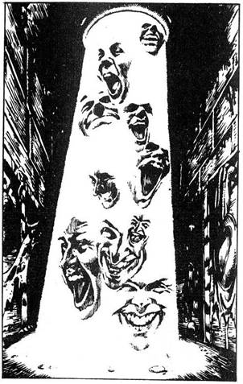
344.
Az alagút kanyarokat Ír le, de határozottan észak felé vezet. Keskeny, kékes fénysugárt látsz magad előtt a mennyezetről a földre vetődni. Csillog és szikrázik, és nevető arcok képeit látod a fényben. Ha keresztül akarsz menni a fényen, lapozz a 229-re. Ha inkább megkerülöd, lapozz a 107-re.
345.
Be akarsz lépni a szobába, amikor a Csapdajelző Ital működni kezd benned, és rettenetes veszélyelőérzettel tölt el. A szoba egy halálos csapda. Úgy határozol, hogy nem mész be, és továbbhaladsz észak felé az alagútban. Lapozz a 252-re.
346.
Lehúzod lábadról a csizmádat, nagy nehezen fel nyúlsz, és a csizmát a haranghoz szorítod. A harang lassan abbahagyja a rezgést, és a testedben fokozatosan megszűnik a fájdalom. Felállsz, de nem veszed el csizmádat a harangról, míg az teljesen el nem csendesül. Ekkor újra felveszed, és továbbhaladsz utadon nyugat felé. Lapozz a 362-re.
347.
A Törpe megrázza fejét, és így szól. - Többet ésszel, mint erővel, csak így győzhetsz a Bajnokok Próbáján. Sajnálom, hogy elbuktál. Nem engedhetjük meg, hogy távozz, nehogy másoknak eláruld a titkainkat. De mert szépen szerepeltél azzal, hogy idáig eljutottál, szolgámmá fogadlak, és a jövőben segítesz előkészíteni az alagutat az új versenyzőknek.
348.
A Vérvadra veted magad, közben megpróbálod elkerülni nyelvét, amely a lábad felé kanyarodik. Dobj két kockával. Ha az összeg akkora vagy kisebb, mint ÜGYESSÉG pontjaid, lapozz a 225-re. Ha az összeg nagyobb, lapozz a 159-re.
349.
A kötélen leereszkedsz a verembe, egyik kezeddel fogod a kötelet, a másikkal a kardodat markolod. A Verembestia a legfélelmetesebb fenevadak egyike, amelyet valaha is láttál, és tudod, hogy életed egyik legkeményebb harca vár.
Verembestia ÜGYESSÉG 12 ÉLETERŐ 15
Ha győzöl, lapozz a 258-ra.

350.
Az Óriáslégy lebukik, és négy lábával megragad. Villámgyorsan felkapaszkodik a barlang tetejére, és tehetetlenül himbálódzol szorításában. Aztán rémületedre hirtelen elenged, és vagy tíz métert zuhanva súlyos puffanással földet érsz. Dobj egy kockát, és a számot vond le ÉLETERŐDBŐL. Ha életben maradsz, épp időben vonod ki kardod, mert az Óriáslégy zúgva közeledik, és Újra meg akar ragadni. Lapozz a 39-re.
351.
A bálvány felülete sima, és igen nehéz felmászni rá. Van nálad kötél? Ha igen, lapozz a 396-ra. Ha nincs, lapozz a 186-ra.

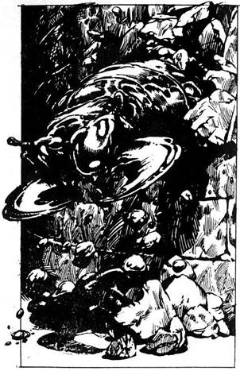
352.
Omladozó, morzsolódó sziklák zaját hallod magad előtt. A zaj növekszik, és hirtelen azt veszed észre, hogy a jobb oldali fal kezd összeomlani. Dermedten figyeled, ahogy egy vastag, szörnyű, hernyószerű teremtmény vonaglik át a falon keletkezett lyukon. Tátongó szája és hihetetlenül erős állkapcsa van, mellyel tovább ropogtatja a sziklákat, miközben lassan jobbra-balra forgatja fejét az alagút levegőjét szagolva. Úgy tűnik, teljesen vak, de tudatában van jelenlétednek, talán érzi tested melegét. Feléd tekereg, állkapcsát szélesre tátja, hogy megtámadjon. Ha felveszed a harcot a Sziklahernyóval, lapozz a 254-re. Ha inkább visszafutsz az alagútban a keleti elágazáshoz, lapozz a 68-ra.

353.
Mielőtt félreugorhatnál, a szikla a válladra zuhan. 1 ÜGYESSÉG és 4 ÉLETERŐ pontot veszítesz. Ha életben maradsz, lapozz a 325-re.
354.
A tablettától úgy érzed, hogy az egész világ ellened van. 2 ÜGYESSÉG pontot veszítesz. A Törpe szól, hogy megkezdheted a Próba második szakaszát. Egy fonott kosárért nyúl, amelyben - mint közli veled - egy kígyó van. Feldönti a kosarat, és a kígyó kihull a földre. Egy kobra az, amely támadásra készen felemelkedik. A Törpe azt mondja, hogy szeretné lemérni reakciódat. Puszta kézzel kell megragadnod a kobrát pont a feje alatt, halálos marását elkerülve. Lekuporodsz a földre, és várod az alkalmas pillanatot, hogy megragadd. Dobj két kockával. Ha az összeg akkora vagy kisebb, mint ÜGYESSÉGED, lapozz az 55-re. Ha az összeg nagyobb, mint ÜGYESSÉGED, lapozz a 202-re.
355.
A verekedő Hobgoblinok mögé kúszol, az árnyékból előugorva a falnak lököd őket, s elfutsz. Hátranézve látod, hogy elterültek a földön, és kuncogva sietsz tovább észak felé. Lapozz a 110-re.
356.
Egy nyílás van a folyosó bal oldali falán. Egy tágas barlang bejáratánál állsz, és egy lány segélykiáltását hallod bentről. Egy emberi alakot veszel észre a barlang mélyén, ahogy a földön hentereg. Ha be akarsz lépni a barlangba, hogy megtudd, mi a helyzet, lapozz a 170-re. Ha inkább továbbmész észak felé az alagútban, lapozz a 192-re.
357.
A Vérvad ott úszkál a medencében, és a mérges gáz szagától, amely a felszínre törve megtölti a levegőt, öklendezned kell. Mit teszel:
Körbeszaladsz a medence oldalán az
alagút felé? Lapozz a 255-re.
Egy drágakövet hajítsz a medencébe
(ha van)? Lapozz a 332-re.
Kardoddal megtámadod a
Vérvadat? Lapozz a 180-ra.
358.
Elveszted az egyensúlyodat, és fejjel lefelé a földre esel. 2 ÉLETERŐ pontot veszítesz. Úgy döntesz, hogy nem próbálod meg újra, és az északi falon levő alagúthoz sietsz. Lapozz a 239-re.
359.
Leesel a kötélről, és fejjel lefelé a szakadékba zuhansz. Egy kiálló sziklacsúcsba beütöd a fejedet, és mire eléred a szakadék fenekét, már halott vagy.
360.
Kifizeted az öreget, és bemászol a kosárba, mire az öreg hátravetett fejjel felkiált: - Húzhatod. Ivy! - A kötél megfeszül, és a kosár zötyögve felemelkedik. Ahogy egyre magasabbra emelkedsz, az öreg felkiált: - Szeretni fogod Ivyt. Kedves lány. Mi Méreg Ivynek hívjuk. - Egész testét rázza a nevetés, és rosszat sejtve gondolsz arra, vajon ki húzhatja a kosarat fölfelé. A kosár a mennyezet fölé emelkedik, és egy kis kamrában találod magad, szemtől szembe egy rusnya Trollnővel. Arca szőrös, és szemölcsök borítják. Vaskos kezével előrenyúl, kiragad a kosárból, amely az alanti szintre hull vissza. Torkon ragad, és suttogva így szól: - Nekem is fizetned kell. Mit teszel:
Felajánlasz neki valamit a
hátizsákodból? Lapozz a 297-re.
Megpróbálod lebeszélni arról, hogy bármit is
kérjen? Lapozz a 328-ra.
Kardoddal rátámadsz? Lapozz a 211-re.

361.
A Verembestia szájával elkapja röptében a majom amulettet, és állkapcsa összecsapódik fölötte. Majd hirtelen újra kipattan, ahogy az amulett, amely a szájban nőni kezd, szétkényszeríti. Míg a Verembestia hánykolódva próbál megszabadulni az amulettől, leereszkedsz a verembe, és a szárnyas ajtó felé tartasz. A Verembestia vad dühében megpróbál testével a falhoz passzírozni. Tedd próbára SZERENCSÉD. Ha szerencséd van, lapozz a 82-re. Ha nincs szerencséd, lapozz a 377-re.

362.
Az alagút élesen jobbra kanyarodik, és ameddig a szem ellát, északnak vezet. Óriási zenebonát hallasz a távolból, morgást, vicsorgást és nyüszítést. Előhúzod kardodat, és elindulsz a zaj felé. Lapozz a 264-re.
363.
Az étel-ital kitűnő, és sokkal jobban érzed magad. 2 ÉLETERŐ pontot nyersz. Elégedetten leülsz, és várod, hogy a Törpe visszatérjen. Lapozz a 302-re.
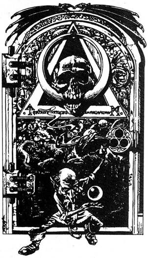
364.
Ahogy letörlöd a Manticore vérét a kardodról, meg lepetten látod, hogy egy nagy orrú emberke ugrik elő az egyik márványpillér mögül. Testhez simuló zöld tunikát visel, és teljesen ártalmatlannak látszik, bár óvatossá tesz a tény, hogy egy csillogó zöld fénnyel teli opálüveg gömböt tart a kezében, - Üdvözöllek - mondja kedvesen - Igbut, a Gnóm a nevem, és én leszek Próbamestered az utolsó akadálynál utadon. Mondanom sem kell, hogy varázserőm hatalmas, ezért jobb, ha nem támadsz meg. Míg ideértél, talán megtudtad már, hogy a drágaköveknek lényeges szerepük van a Bajnokok Próbáján. Az előtted levő vasajtó vezet a szabadba, a győzelemhez, de csak egyetlen módon tudod kinyitni. Három drágakövet kell a zárba tenned, méghozzá meghatározott sorrendben, hogy az ajtó kinyíljon. Mindegyik drágakő egy sajátos energiát sugároz, amely - legalábbis, ha helyesen csinálod - működésbe hozza a szerkezetet. Egy picit segítek neked, de először is szükségünk van a megfelelő drágakövekre. Van nálad smaragd? - Ha igen, lapozz a 31-re. Ha nincs, lapozz a 3-ra.
365.
Megmondod Thromnak, hogy nincs értelme megölni a Törpét, mert egyedül soha nem találjátok meg a kivezető utat. Azzal érvelsz, hogy később majd csak lesz lehetőség tőrbe csalni a Törpét, ha már megtalál tátok a kamra kijáratát, ezért te vállalod, hogy végig csinálod a Törpe tesztjeit. Közlöd a Törpével, hogy készen állsz, és ő int, hogy kövesd. Thromnak pedig azt mondja, hogy várjon, míg ő visszatér. Egy titkos ajtó nyílik meg a kamra falán, és egy kör alakú kis szobába követed a Törpét. Az bezárja az ajtót mögötted, és két csontkockát ad, hogy dobj velük. Egy 6-ost és egy 2-est dobsz, együtt 8-ad van. Ezután a Törpe felszólít, hogy dobj újra, és mondd meg, hogy az összeg kisebb vagy nagyobb lesz-e 8-nál, vagy ugyanakkora. Ha azt tippeled, hogy a második dobás is 8 lesz, lapozz a 290-re. Ha azt tippeled, hogy az összeg kisebb lesz, mint 8, lapozz a 191-re. Ha azt tippeled, hogy a második dobás összege 8-nál nagyobb lesz, lapozz a 84-re.
366.
A hőmérséklet folyamatosan emelkedik, már messze túl van azon a határon, amit az emberi szervezet elviselni képes. A folyosó csaknem megolvadt földjén heverve többé nem nyered vissza az eszméletedet. Kalandod itt véget ér.
367.
Aggódva néz rád, amikor közlöd vele, hogy a Bajnokok Próbájának egyik résztvevője vagy. Megkérded, mi dolga az alagútban, mire ő eléggé vonakodva feleli, hogy az egyik Próbamester szolgája. A Próbamesterek a labirintus egy-egy szakaszának felügyelői. Miután egy ideig társalogtok, bevallja, hogy szeretne elmenekülni, de senki sem hagyhatja el a labirintust, nehogy titkai napvilágra kerüljenek. Elmondja, abban bízik, hogy egy nap megkenhet valakit, hogy elnyerje szabadságát, és még hozzáteszi, hogy egy aranyért megtudhatod tőle, hol van az elrejtett kincs. Ha fizetsz az öreg tanácsáért, lapozz a 244-re. Ha inkább elbúcsúzol tőle és továbbmész nyugatnak, lapozz a 109-re.
368.
Az alagút bal oldali falának támasztva egy pár bambusz gólyaláb áll. A falhoz láncolták, és egy cédula van a lakatra tűzve, amelyen ez a felirat: „A gólyalábak ára egy arany. Helyezd az érmét a nyílásba, hogy a zár kinyíljon.” Ha meg akarod venni a gólyalábakat, lapozz a 165-re. Ha inkább továbbmész észak felé, lapozz a 234-re.
369.
Az alagút élesen jobbra fordul, és ameddig a szem ellát, keletnek vezet. Throm megáll, és téged is megállít. Lassan forgatva fejét hallgatózik. Lépéseket hallok suttogja. Húzd ki a kardodat, - Mindketten az árnyékba rejtőztök, és egy perc sem telik bele, máris feltűnik két fegyveres alak. Throm hangos csatakiáltással ugrik elő a sötétből és veti magát rájuk. Két Barlangi Troll az. Throm csatabárdjával az elsőre támad, te a segítségére sietsz, és nekiesel a másiknak.
Barlangi Troll ÜGYESSÉG 10 ÉLETERŐ 11
Ha győzöl, lapozz a 288-ra.
370.
Amint körbefutsz a medence oldalán, a Vérvad ismét kicsapja hosszú nyelvét. Dobj két kockával. Ha az összeg akkora vagy kisebb, mint ÜGYESSÉG pontszámod, lapozz a 104-re. Ha az összeg nagyobb, lapozz a 342-re.
371.
Megcélzod a koponyát, elhajítod a fagolyót. Dobj két kockával. Ha az összeg akkora vagy kisebb, mint ÜGYESSÉG pontod, lapozz a 273-ra. Ha az összeg nagyobb, lapozz a 113-ra.

372.
Végül eléred a harcos holttestét, de mihelyt a rubinhoz érsz, mind az, mind a harcos szétfoszlik a levegőben. Hallod, hogy az ajtó becsukódik mögötted, majd fenyegető moraj támad fölötted. Felnézel, és látod, hogy a mennyezet kezd leereszkedni. Az ajtóhoz rohansz, de az zárva van, és nincs rajta kilincs. A mennyezet fokozatosan ereszkedik, végül a földre kell feküdnöd, és kezeddel, lábaddal próbálod visszatartani. De ez reménytelen próbálkozás, és a kősír halálra zúz.
373.
Fölmászol a lágy sziklára, attól tartasz, hogy bármelyik pillanatban elnyelhet. Nehéz átvergődni rajta, mert puha anyagában alig tudod a lábadat emelni, de végül átvergődsz rajta. Megkönnyebbülten érsz újra szilárd talajra, és fordulsz kelet felé. Lapozz a 13-ra.
374.
Körül járod a barlangot, de semmi érdekeset nem találsz. Throm szólal meg mögötted, mondván, hogy az egyik sziklahalom alatt egy bőrtarisznyát talált. Kinyitjátok a tarisznyát, és Throm hangos nevetésben tör ki, ahogy egy apró egérke szalad ki belőle, és az ujjai között átrohanva bemenekül egy sziklahasadékba. Hirtelen repedező szikla hangját halljátok a fejetek fölül. Felnézve látjátok, hogy a cseppkövek kezdenek elválni a boltozattól. Throm harsogó nevetése a barlangon végigvisszhangozva rezgésbe hozta a cseppköveket, és letördelte őket. Thromra kiáltasz, hogy meneküljön, de a cseppkövek már hullanak is. Tedd próbára SZERENCSÉD. Ha szerencséd van, lapozz a 118-ra. Ha nincs szerencséd, lapozz a 295-re.
375.
Savas felhő csap ki a köcsögből, ahogy beleengeded a ruhát. A folyadék nyilvánvalóan valami sav. Visszazárod a köcsögöt, és a hátizsákodba teszed, remélve, hogy egyszer még hasznát veszed. Hüvelyébe dugod kardodat, és továbbmész északnak. Lapozz a 110-re.
376.
A Gnóm még mindig mosolyogva, izgatottan válaszol: - Kitűnő. Már csak egy kell. Van nálad gyémánt? - Ha találtál gyémántot, lapozz a 62-re. Ha nem találtál gyémántot, lapozz a 3-ra.
377.
Az óriási bestia a karodnak ütközik, és elengeded a kötelet. Fájdalmadban felkiáltva a verem fenekére zuhansz. 5 ÉLETERŐ pontot veszítesz. Ha életben maradsz, lapozz a 203-ra.
378.
Némileg idegesen mély lélegzetet veszel, és a sötét medencébe ugrasz. Az északi fal nem nyúlik mélyre a víz alá, és úgy döntesz, hogy megkockáztatod, s átúszol alatta. Hamar elfogy a levegőd, és zihálva a víz felszínére buksz. Megpróbálsz nem gondolni arra, hogy talán egy régi, elárasztott alagútban vagy, és nagyon megkönnyebbülsz, amikor megérzed magad körül a hideg levegőt. A fal másik oldalán vagy, és látod, hogy az alagút kiemelkedik a vízből, s továbbvezet észak felé. Kimászol a vízből, és ellenőrzöd hátizsákod tartalmát. Tedd próbára SZERENCSÉD. Ha szerencséd van, lapozz a 112-re. Ha nincs szerencséd, lapozz a 209-re.
379.
A hosszú párharctól kimerülten térdre esel. Throm mozdulatlan testére meredsz, és keserű gyűlöletet érzel a Törpe iránt. Valahogy meg kell bosszulnod Thromot. Annyira lefoglal gyűlöleted, hogy észre sem veszed, hogy a Törpe belép az arénába. Csak amikor már ott áll veled szemben, és megfeszített íját rád irányítja, akkor látod meg. - Tudom, mit gondolsz - mondja hűvösen -‚ de ne feledd, hogy csak én tudom a kiutat innen. Kelj fel, ideje indulnod. - Felállsz, és a Törpe int, hogy menjél előre. Visszaérve a kamrába az északi falhoz megy, és
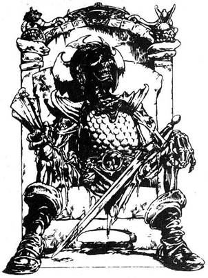
nekidől az egyik kőnek. A fal egy ajtónyi részen megnyílik, és egy újabb, kristály világította alagút tűnik fel. A Törpe, még mindig a mellednek irányzott íjjal mosolyogva mondja: Sok szerencsét. Ha bemész az alagútba, lapozz a 213-ra. Ha inkább leütöd a Törpét, lapozz a 145-re.
380.
Az Ork láncos buzogánya pajzsodnak ütközik, és lepattan róla. Az alagút túl keskeny ahhoz, hogy mindketten egyszerre támadjanak, így egyenként veheted fel velük a harcot.
Első Ork ÜGYESSÉG 5 ÉLETERŐ 5
Második Ork ÜGYESSÉG 6 ÉLETERŐ 4
Ha győzöl, lapozz a 257-re.
381.
Körülnézel a szobában, és semmi érdekeset nem látsz, kivéve egy kis fülkét a nyugati falban és egy kőszéket annak közepén. A széken egy páncélos harcos csontváza ül, egy évek óta halott Bajnokjelölt lehet. A csontváz jobb kezében egy darab pergamen van. Ha el akarod venni a pergament a csontváztól, lapozz a 331-re. Ha inkább a fülkéhez mész, lapozz a 128-ra.
382.
Az öreg az egyik szoborra mutat, és azonnal felismered. A lovag az, aki előtted indult a Bajnokok Próbáján, arcán örök időkre kőbe vésve a fájdalom. Az öreg mosolyogva mondja: Ez az ember 60 kg-ot nyom, plusz a súlyának a felét. Mennyi a súlya? Mit válaszolsz:
60 kg-ot? Lapozz a 144-re.
90 kg-ot? Lapozz a 227-re.
120 kg-ot? Lapozz a 391-re.
383.
Legnagyobb meglepetésedre semmi rendkívüli nem történik, míg a székben ülsz. Nincs mást tenned, mint továbbmenni észak felé az alagútban. Lapozz a 188-ra.
384.
A negyedik lépésnél a lábad hirtelen eltűnik. Mély gödörbe süllyed, és mielőtt kihúzhatnád, éles fájdalmat érzel, ahogy hegyes fogak mélyednek belé. A magas, visító hangokat, amit hallottál, patkányok adják ki. Éhesek, és a lábadba marva éhüket akarták csillapítani. 2 ÉLETERŐ pontot veszítesz. Visszanyered az egyensúlyodat, és kihúzod a lábad a lyukból. Három patkány még mindig a lábadba kapaszkodik fogaival. Vadul rugdosva a korlátnak zúzod fejüket, míg el nem engednek. Majd ingedből kötést tépsz, vérző lábad köré tekered, aztán fölmész a lépcsőn, és továbbhaladsz északnak. Lapozz a 277-re.
385.
Az üvegfiola tartalmát a szádba öntöd, és lenyeled a tiszta folyadékot. Bár semmi azonnali változást nem érzel, reméled, hogy az ital olyan illúziót kelt, mintha te is Troglodyta lennél, mint azok ott előtted. Mély lélegzetet véve merészen a barlangba lépsz. A Troglodyták azt hiszik, közéjük tartozol, és folytatják törzsi táncukat. Elmész mellettük, és észak felé haladsz. Sajnos az ital hatása rövid életű. Hirtelen visítást hallasz magad mögül, ahogy az egyik Troglodyta észrevesz, és futnod kell a barlangon keresztül. Egy föld alatti folyót látsz magad előtt, amely keletről nyugatra folyik a barlangon keresztül, és egy fahíd keresztezi. Ha át akarsz futni a hídon, lapozz a 318-ra. Ha a vízbe veted magad, lapozz a 47-re.
386.
Három métert sem mész, és láthatatlan kerítésbe ütközöl. Csattog, sistereg, végül visszalök. Villámnyalábba ütköztél. 1 ÉLETERŐ pontot veszítesz. Nincs más választásod, mint visszamenni a kereszteződéshez és északnak indulni. Lapozz a 218-ra.

387.
Hallod, hogy elölről súlyos lépések közelednek. Egy széles, állatbőrökbe öltözött, kőbaltás, primitív lény lép elő. Ahogy meglát, morog, a földre köp, majd a kőbaltát felemelve közeledik, és mindennek kinéz, csak barátságosnak nem. Előhúzod kardodat, és felkészülsz, hogy megküzdj a Barlangi Emberrel.
Barlangi Ember ÜGYESSÉG 7 ÉLETERŐ 7
Ha győzöl, lapozz a 114-re.
388.
Az alagútnak itt vége szakad. A falra egy darabka, az évek során megbarnult papírt szögeltek. Ha le akarod venni a falról és megnézni, milyen üzenet van rajta, lapozz a 23-ra. Ha inkább visszasietsz az alagútban, és csatlakozol a Barbárhoz, lapozz a 154-re.
389.
Fegyvereid nélkül sebezhetőbb vagy, és a kardod nélkül szinte meztelennek érzed magad. 4 ÜGYESSÉG pontot veszítesz. Tűnődve, hogy helyesen döntöttél-e, továbbhaladsz észak felé. Lapozz a 181-re.

390.
Lekuporodsz az oszlop mellé az íjak tűzvonala alá. Felnyúlsz, és leveszed a koponyát az oszlopról, várva, hogy tetted elszabadítja-e a nyilakat. Legnagyobb meglepetésedre semmi sem történik. 1 SZERENCSE pontot nyersz. Még mindig kuporogva kiveszed a koponya ékkő szemeit. Felismered, hogy topáz, és a hátizsákodba teszed őket. Felnézel az íjak sorára, és azon tűnődsz, vajon vár-e még csapda a szobában. Mit teszel:
A koponyát fogva kikúszol a
szobából? Lapozz a 15-re.
Visszateszed a koponyát az oszlopra, mielőtt
kikúsznál a szobából? Lapozz a 204-re.
391.
Az öreg még mindig mosolyogva néz rád, és így szól: - Jól van, idegen. Helyesen válaszoltál. Sok szerencsét kívánok neked a Bajnokok Próbája hátralévő részéhez, és ezért növelem erődet. - Néhány kivehetetlen szót mormol, és úgy érzed, hatalmas hullám söpör keresztül testeden. Mind ÜGYESSÉG, mind SZERENCSE, mind ÉLETERŐ pontjaidhoz adj 1-et. Elköszönsz az öregtől, és elhagyva a szobát továbbmész észak felé az átjáróban. Lapozz a 100-ra.
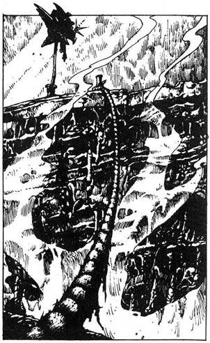
392.
Hallod, hogy a Gnóm így szól: - Három koponya -‚ s rögtön ezután fehér villámnyaláb csapódik ki a zárból a melledre, és elveszted az eszméletedet. Dobj egy kockával, adj 1-et a számhoz, és vond le ÉLETERŐDBŐL az összeget. Ha életben maradsz, magadhoz térsz, és a Gnóm felszólít, hogy próbáld meg Újra. Egyik követ sem tetted jó helyre, tehát ezzel a kombinációval nem próbálkozol újra.
A B C
Smaragd Gyémánt Zafír Lapozz a 16-ra.
Gyémánt Zafír Smaragd Lapozz a 392-re.
Zafír Smaragd Gyémánt Lapozz a 177-re.
Smaragd Zafír Gyémánt Lapozz a 287-re.
Gyémánt Smaragd Zafír Lapozz a 132-re.
Zafír Gyémánt Smaragd Lapozz a 249-re.
393.
Egy mély szakadék által kettészelt szobába lépsz. A szakadék fölött egy kötél van kifeszítve, s a túloldalon egy remek szárnyas sisak van egy cölöp tetején. Ha át akarsz menni a kötélen a sisakért, lapozz a 274-re. Ha inkább visszamész az alagútba, hogy továbbmenj észak felé, lapozz a 291-re.
394.
Kardod markolatával bezúzod az üveget, és akkora lyukat csinálsz, amelyen át be tudsz mászni. Az Óriás Férgek azonnal feléd másznak, és veszedelmesen támadnak. Nem vesztegeted az időt, felkapod az egyik égő fáklyát, és azzal véded magad. A tűz a legtöbb férget távol tartja, de mire megkaparintod a koronát és visszamászol a folyosóra, néhány rád mászik. Dobj egy kockával, és
adjál 2-t a kapott számhoz. Ez a kapott csípések száma, és csípésenként 1 ÉLETERŐ pontot levonsz. Az Óriás Férgek nem üldöznek, jobban szeretik szobájuk fényes világosságát. Megvizsgálod a koronát, és dühödten látod, hogy mindössze festett vas, és a gyémántok értéktelen üvegből vannak. A földre hajítod haragodban, és töröd a fejed, merre is indulj. Ha nyugat felé, lapozz az 59-re. Ha inkább visszamész az elágazáshoz észak felé, lapozz a 14-re.
395.
Az egyik Troglodyta meghallja a zajt, amit kardhüvelyeddel ütöttél, és riadót fúj. Felállsz, és amilyen gyorsan csak tudsz, futsz a barlangon keresztül. Egyik íjászuk utánad lő. A vessző halálos pontossággal vágódik a válladba. 3 ÉLETERŐ pontot veszítesz. Ha életben maradsz, lapozz a 259-re.
396.
Lasszót csomózol a kötélből, és megpörgetve a fejed fölött, a bálvány fejére hajítod. Boldogan mosolyogsz, ahogy a hurok a bálvány nyakára hull. Megszorítod a csomót, és mászni kezdesz a kötélen fölfelé. Hamarosan a bálvány tetején vagy, s a kötélbe kapaszkodva a szobor orrára ülsz. Előhúzod kardodat, és eltűnődsz, melyik szemén kezd. Ha a bal szemet akarod kipiszkálni, lapozz a 151-re. Ha a jobb szemet akarod kipiszkálni, lapozz a 34-re.
397.
A folyadék egy varázsital, amely képessé tesz, hogy megérezd a rejtett csapdákat. 2 SZERENCSE pontot nyersz. Ha eddig nem tetted meg, kinyithatod a vörös könyvet - lapozz az 52-re, ha inkább folytatod utadat Thrommal észak felé - lapozz a 369-re.
398.
Bár semmilyen látható csapdát nem veszel észre, erősen érzed, hogy a láda veszélyt rejteget. A Csapda Jelző Ital jól dolgozik. Oldalt állsz, és kinyújtott karral, kardod hegyével emeled föl a tetőt. Ahogy a tető fel emelkedik, egy zsinóron függő vasgolyó hátralendül, és eltör egy, a fedél belsejéhez rögzített üvegkapszulát, amelyből azonnal gáz szabadul föl. Szerencsére van időd hátraugrani anélkül, hogy belélegeznéd a mérgező gázt. Mihelyt a gáz szétoszlik, visszamész a ládához, és belenézel. Egy lánc hever a láda alján, de valaki már kivette a követ a foglalatból. Annyira bosszant a dolog, hogy a földhöz vágod a láncot, és kiviharzol a szobából az alagútba. Lapozz a 230-ra.
399.
A kenyér titkos varázserejű gyógyfüveket tartalmaz. 3 ÉLETERŐ pontot nyersz. Szomorúnak, de erősnek érzed magad, elrakod a tükröt és a kabalát, és távozol a barlangból, majd továbbmész észak felé. Lapozz a 192-re.
400.
Amint feltűnsz az alagút kijáratánál, hatalmas tömeg ujjongása, éljenzése fogad. Ünneplő emberek kettős sorfala előtt mész le egy kis emelvényhez, amelyen egy színes bambuszernyő alatt Szukumvit báró ül. Meglepettnek látszik, nem hitte volna, hogy valakinek is sikerül élve átjutnia Halállabirintusán. Fang titka lelepleződött. Ahogy a Báró felemelkedik székéből, te felmész az emelvény lépcsőin, mélyen meghajolsz előtte, és nézed, ahogy hideg szemével hitetlenkedve tekint rád. Kelletlenül mosolyogsz, mikor kezet nyújt. Fang népének fülsiketítő éljenzése közepette Szukumvit báró kinyitja a 10 000 aranyas díjat tartalmazó ládát. Aztán babérkoszorút téve fejedre, kihirdeti, hogy te vagy a Halállabirintus Bajnoka.